Questão 1 · Diverticulite Aguda · 4000184164Homem, 72 anos de idade, procura o Serviço de Urgência devido à dor no anco e na fossa ilíaca esquerdos há 2 dias. Fez uso de analgésico sem melhora. Refere ser constipado e está sem evacuar há três dias. Nega febre e relata perda de apetite. Tem diabete melito e hipertensão arterial controlados. Ao exame clínico, encontra-se em bom estado geral; IMC 30,2 kg/m²; FC 80 bpm; PA 130x80 mmHg; sem alterações da ausculta torácica; abdome globoso, ácido, doloroso à palpação do flanco e da fossa ilíaca esquerdos, com sinal de irritação peritoneal neste local; ruídos hidroaéreos presentes; e toque retal com fezes na ampola. Exames laboratoriais: Hb 13,1 g/dL; Ht 38%; Leucócitos 15.693/mm³; PCR 138 mg/L. Tomografia apresentada. Qual é a melhor conduta neste momento?
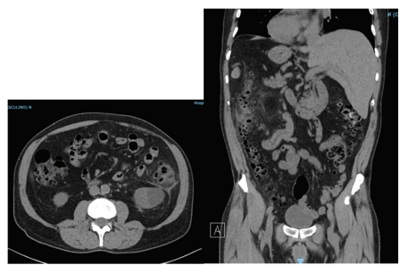
A Laparoscopia diagnóstica.
B Drenagem percutânea da coleção.
C Tratamento clínico.
D Colectomia esquerda com anastomose.
Questão 2 · Inf ectologia · 4000184163Mulher, 65 anos de idade, está internada na enfermaria, no sexto dia de pós-operatório de colectomia direita por câncer de cólon. Evoluiu com dor abdominal, vômitos e febre. Ao exame clínico, encontra-se em bom estado geral, FC de 100 bpm e PA de 110x70 mmHg; dor abdominal à palpação difusa com irritação peritoneal. Realizada a tomogra a de abdome total com imagem compatível com deiscência da anastomose intestinal. Foi indicada laparotomia exploradora com presença de peritonite purulenta e deiscência da anastomose. Dentre as alternativas abaixo, qual é o esquema de antibioticoterapia mais adequado?
A Ceftriaxone + metronidazol; 10 dias.
B Piperacilina + tazobactan; 10 dias.
C Ceftriaxone + metronidazol; 5 dias.
D Piperacilina + tazobactan; 5 dias.
Questão 4 · Abscessos Anorretais · Cirurgia · 4000184161Homem, 23 anos de idade, refere dor na região perianal há 3 dias com piora progressiva e exacerbação ao sentar e evacuar. Relata febre há 12 horas. Teve a última evacuação há 2 dias e tem hábito intestinal diário normal. Sem queixas urinárias. Nega comorbidades. Tem vida sexual ativa com relação anal, sem parceiro xo. Ao exame clínico, encontra-se em bom estado geral; abdome sem alterações. Inspeção anal com abaulamento em posição equivalente a “3 horas”, dor à palpação local e saída de secreção purulenta em pequena quantidade, em posição equivalente a “7 horas”, em orifício fistuloso (imagem a seguir). Toque retal muito doloroso, sem sangue ou lesão tumoral. Exames laboratorias Hb de 13,5 g/dL; Leucograma 16.274 mm³; PCR 129 mg/L. Realizada tomografia de pelve (imagens a seguir) Qual é a etiologia mais comum desta doença?
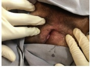
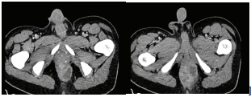
A Doença de Crohn.
B Inflamação das glândulas do canal anal.
C Retocolite ulcerativa.
D Infecção sexualmente transmissível.
Questão 5 · Nutrição em Cirurgia e Recuperação PósOperatória · Cirurgia · 4000184160Homem, 19 anos de idade, procurou o Serviço de Emergência devido à dor abdominal há 1 dia. Não apresenta comorbidades. O paciente foi submetido a tratamento operatório com os achados apresentados. O procedimento evoluiu sem intercorrências. Qual deve ser a dieta no primeiro pós-operatório e quando deve receber alta hospitalar?
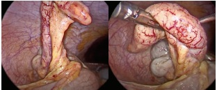
A dieta leve; terceiro pós-operatório.
B dieta leve; primeiro pós-operatório.
C jejum; primeiro pós-operatório.
D jejum; terceiro pós-operatório.
Questão 6 · Inf ecção de Ferida Operatória Inf ecção de Sítio Cirúrgico ISC · Cirurgia · 4000184159Mulher, 54 anos de idade, está no 6º pós-operatório de correção de hérnia incisional de laparotomia mediana com colocação de tela de polipropileno sobre a aponeurose (técnica dor na incisão e com saída de secreção espessa e purulenta. Ao exame clínico, encontra-se em bom estado geral, afebril, abdome (imagem a seguir) flácido e pouco doloroso à palpação. Qual deve ser a conduta neste momento?
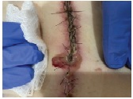
A Troca da tela e curativo com carvão ativado.
B Cefazolina com abertura da incisão, se não houver melhora.
C Retirada da tela e curativo com pressão negativa.
D Retirada de pontos, desbridamento e curativo diário.
Questão 7 · Seroma · Cirurgia · 4000184158Mulher, 63 anos de idade, foi submetida à correção de hérnia incisional de laparotomia mediana. Foi feita a correção da hérnia com colocação de tela pré-aponeurótica ( pós-operatório após a retirada do dreno. A paciente retorna em consulta ambulatorial, 7 dias após a alta, com queixa d e abaulamento na incisão. Ao exame clínico, encontra-se em bom estado geral; abdome ácido, indolor à palpação, presença de coleção líquida no subcutâneo, sem sinais inflamatórios. Ultrassom de parede abdominal apresentado. Qual deve ser a conduta neste momento?
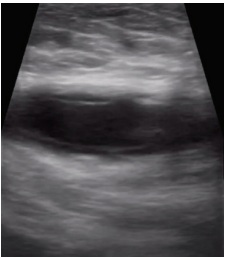
A Iniciar antibioticoterapia.
B Recolocar o dreno subcutâneo.
C Usar cinta abdominal.
D Abrir parcialmente a incisão.
Questão 8 · Seroma · Hérnia Incisional · Cirurgia · 4000184157Homem, 57 anos de idade, foi submetido à correção de hérnia incisional de laparotomia mediana com colocação de tela sobre a aponeurose (imagem a seguir). Qual é o princípio de funcionamento do dreno indicado para esta situação?
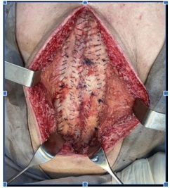
A Gradiente de pressão, passivo.
B Gradiente de pressão, ativo.
C Capilaridade, ativo.
D Capilaridade, passivo.
Questão 9 · Tórax Instável e Contusão Pulmonar · Cirurgia · 4000184156Homem, 33 anos, vítima de acidente de motocicleta em alta velocidade. Foi intubado na cena devido à inconsciência. Condições na admissão no Serviço de Emergência: I – entubado, saturação de O₂ 85%, colar cervical; II – escoriação no tórax direito, ausculta diminuída à direita, sem enfisema de subcutâneo; III – PA 140x80 mmHg, FC 100 bpm, FAST negativo. IV – escala de Coma de Glasgow de 3T, sedado; V – fratura exposta de perna direita. Encaminhado para tomografia Qual deve ser a conduta com relação ao trauma de tórax?
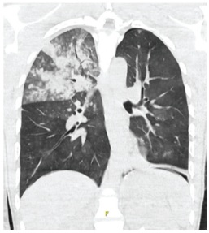
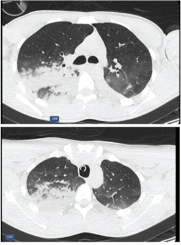
A Ventilação mecânica.
B Drenagem torácica.
C Tração do tubo traqueal.
D Videotoracoscopia.
Questão 10 · Hipertensão Intracraniana · Manejo Clínico · Neurologia · 4000184155Homem, 42 anos, vítima de colisão de moto contra anteparo xo, com traumatismo craniano. Na sala de trauma, encontra- se entubado, em ventilação mecânica protetora. A tomogra a de crânio mostra edema cerebral difuso, sem lesões focais ou sinais de hipertensão intracraniana. Qual é a conduta com relação ao trauma de crânio na Sala de Trauma?
A hipotermia; hipotensão permissiva; monitorização da pressão intracraniana.
B hiperventilação; hipotermia protetora; manitol endovenoso.
C sedação com tiopental; hidantoína; controle de temperatura.
D proclive; controle de temperatura; posição cervical neutra.
Questão 11 · Tumor Estromal Gastrointestinal GIST · Sangramento por Lesão Neoplásica · 4000184154Hemorragia Digestiva Alta Não Varicosa HDA Nâo Varicosa Mulher, 59 anos de idade, foi admitida no Serviço de Emergência devido à melena há 6 dias. Nega alteração do hábito intestinal. Sem comorbidades. Relata ingestão de bebida alcóolica nos nais de semana (1 lata de cerveja). Fez uso de anti- inflamatório há 1 mês. Ao exame clínico, encontra-se em bom estado geral; descorada; abdome ácido; sem massas palpáveis; e ausência de ascite. Exames laboratoriais: Hb 8,7 g/dL; Ht 26%; Plaquetas 231 mil/mm³; INR 1,1. Foi realizada a endoscopia digestiva alta que mostrou a seguinte lesão no corpo gástrico: Considerando o quadro clínico e o achado endoscópico, qual é o diagnóstico mais provável?

A Tumor estromal gastrointestinal (GIST).
B Adenocarcinoma gástrico.
C Varizes gástricas.
D Úlcera gástrica Forrest III.
Questão 12 · Cistos do Mediastino · 4000184153Lactente de 2 anos de idade, oligossintomático, é trazido à consulta ambulatorial por apresentar a seguinte imagem radiográfica: Qual é a principal hipótese diagnóstica?

A Malformação adenomatoide cística.
B Cisto pulmonar congênito.
C Cisto broncogênico.
D Teratoma.
Questão 14 · Queimaduras e Trauma Elétrico · Cirurgia · 4000184151Homem, 28 anos de idade, pesando aproximadamente 70 Kg, vem encaminhado ao Pronto Atendimento com história de queimadura térmica por explosão de frasco de álcool líquido em casa, enquanto fazia churrasco. O exame clínico de entrada mostrou queimaduras de segundo grau em face, membros superiores e tórax anterior, totalizando 10% da superfície corporal. Assinale a alternativa com as condutas adequadas.
A internação, flictenas intactas e curativos expostos em face.
B internação, desbridamento das flictenas e curativos.
C tratamento ambulatorial, flictenas intactas e curativos expostos em face.
D tratamento ambulatorial, desbridamento das flictenas e curativos.
Questão 15 · Tratamento Cirúrgico da Obesidade · 4000184150Mulher, 27 anos, há 1 ano foi submetida à derivação gástrica em Y de Roux para tratamento de obesidade. Refere perda de 40 kg neste período. Procura o Serviço de Emergência devido à dor abdominal intensa, em cólica difusa, com início há 4 ho ras. Relata náuseas, porém sem vômitos. Nega melhora com analgésicos. Ao exame clínico, encontra-se em posição antálgica, FC 122 bpm, abdome pouco distendido, doloroso em hipocôndrio esquerdo, sem sinais de irritação peritoneal e com ruídos hidroaéreos aumentados em frequência. Exames laboratoriais: Hb 11,2 g/dL; Ht 38%; Leucograma 17.223/mm³; PCR 17 mg/L; Ureia 90 mg/dL; Creatinina 1,7 mg/dL. Tomografia de abdome apresentada abaixo. Qual deve ser a conduta, além de hidratação e analgesia?
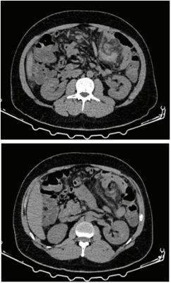
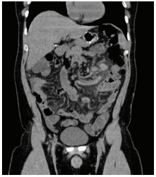
A Trombólise.
B Sonda gástrica e observação.
C Dilatação endoscópica da anastomose.
D Tratamento operatório.
Questão 16 · Doenças Orif iciais · Cirurgia · 4000184149Homem, 61 anos, refere sangramento intermitente nas evacuações e sangue vivo no nal da evacuação e no papel higiênico. As fezes têm cor e consistência normais. Evacua a cada 3 dias e refere fezes ressecadas. Fez colonoscopia há 2 anos, que evidenciou doença diverticular difusa. Exames clínico e laboratoriais sem alterações. Toque retal normal e exame proctológico conforme as imagens a seguir (figuras 2 e 3 representam anuscopia; seta ilustra a linha pectínea). Qual é a melhor conduta?
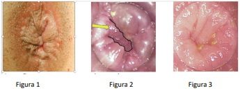
A Drenagem do trombo hemorroidário.
B Orientação de dieta e higiene anal.
C Retossigmoidoscopia.
D Hemorroidectomia.
Questão 17 · O pé diabético · Cirurgia · 4000184148Homem, 65 anos, com diagnóstico de lesão em face medial e dorso do pé direito há 10 dias, após caminhada com um sapato novo. Nega claudicação prévia. Ao exame clínico, além da lesão da foto a seguir, apresenta pulsos poplíteo e tibiais presentes. Qual é a conduta?
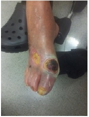
A Amputação transtibial primária.
B Arteriografia e revascularização.
C Desbridamento e antibioticoterapia.
D Aguardar delimitação da necrose.
Questão 18 · Cirurgia · Trauma Renal · 4000184147Homem, 19 anos, foi vítima de queda de bicicleta em alta velocidade. Na admissão no serviço de Emergência, encontrava- se consciente, com PA de 120x70 mmHg e FC de 105 bpm; abdome doloroso à palpação em hipocôndrio e anco esquerdo. Após a passagem de sonda vesical, foi evidenciada hematúria. Exames laboratoriais com uma hora após trauma: Hb 9,6 g/dL; Ht 28%; Ureia = 54 mg/dL; Creatinina 1,1 mg/dL; pH 7,37; BE 1; Lactato 10 mg/dL. A tomografia de abdome é apresentada. Qual é o tratamento para a lesão abdominal neste momento?
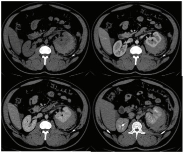
A Observação com monitorização hemodinâmica.
B Passagem de cateter duplo J.
C Laparotomia com nefrectomia.
D Nefrostomia.
Questão 19 · Fraturas do f êmur proximal · 4000184146Homem, 75 anos, foi trazido ao Serviço de Emergência pelos familiares após encontrá-lo caído ao lado de sua cama. Tem hipertensão arterial sistêmica e obesidade. Lúcido, o paciente refere que caiu sobre o quadril direito após tropeçar no tapete ao lado da cama; desde então não consegue deambular. Nega trauma encefálico. Previamente deambulador social, conseguia realizar apenas atividades básicas diárias sozinho. Atendimento inicial já realizado e solicitada a radiografia abaixo. Qual é o achado clínico compatível com a história e com o achado radiológico apresentados?
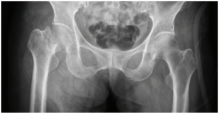
A Membro inferior encurtado com rotação interna.
B Membro inferior encurtado com rotação externa.
C Membros inferiores simétricos com rotação interna do direito.
D Membros inferiores simétricos com rotação externa do direito.
Questão 20 · Tumores ósseos · Avaliação por Imagem de Tumores Ósseos · 4000184145Homem, 17 anos, refere contusão do joelho há 1 mês, durante prática esportiva. Relata que, desde então, a dor no joelho persiste, sem melhoras com aplicação de gelo e com uso de anti-inflamatórios. A radiografia é apresentada. Considerando a hipótese diagnóstica, assinale a alternativa correta.
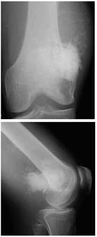
A Corpo estranho.
B Abscesso.
C Hematoma.
D Neoplasia.
Questão 21 · Cistos mamários · 4000184144Paciente, 27 anos, refere nodulação palpável em mama direita que se acentuou no período pré-menstrual. N e g a antecedentes clínicos, refere um parto vaginal há 5 anos, em uso de preservativo como contracepção; última menstruação há 10 dias. Nega uso de outros medicamentos e antecedentes familiares significativos. Ao exame clínico das mamas, identi ca-se nodulação com cerca de 3 cm, regular, dolorosa e móvel em quadrante súpero-externo de mama direita, recoberta com pele de aspecto normal. A ultrassonografia da região acometida é apresentada. Realiza-se punção aspirativa com saída de 10 mL de líquido (imagem abaixo) seroso acastanhado, com melhora significativa da dor. Não mais se percebe o achado palpatório e ultrassonográfico. Qual é a conduta mais adequada?
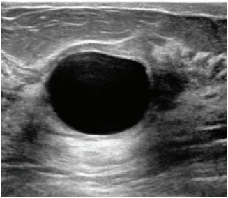
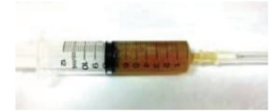
A Biópsia excisional.
B Seguimento clínico.
C Biópsia agulha grossa.
D Tomossíntese mamária.
Revisar: possível letra faltando em enunciado
Questão 22 · Ginecologia · Anatomia do trato genital f eminino · Fios de Sutura · 4000184143Paciente, 45 anos, será submetida à histerectomia total abdominal em decorrência de miomatose uterina. Você é o instrumentador e o cirurgião solicita porta-agulhas montado com o fio para a sutura da cúpula vaginal. Qual é o tipo de fio adequado para este tempo cirúrgico?
A Poliéster.
B Nylon.
C Poliglactina.
D Polipropileno.
Questão 23 · Síndrome de Morris · Ginecologia · 4000184142Paciente, 18 anos, em investigação para amenorreia secundária. Ao exame clínico apresenta mamas Tanner 3, pilificação mínima axilar e pubiana, estatura percentil 60 e peso percentil 40, identi ca-se discreta hérnia inguinal bilateral. Exame ginecológico: vulva com pouca pili cação, desenvolvida e adequada, hímen íntegro e perfurado, restringindo exame especular e toque vaginal. O exame ultrassonográ co abdominal é normal, corpo uterino não identi cado, gônadas de volume habitual em topografia de paredes pélvicas. Considerando a principal hipótese diagnóstica, qual é o achado associado?
A FSH e LH elevados.
B Cariótipo 45 X0.
C Testosterona sérica elevada.
D Cariótipo 47 XXY.
Revisar: possível letra faltando em enunciado
Questão 24 · Quadro clínico · Diagnóstico · Critérios diagnósticos · 4000184141Paciente, 20 anos, refere aumento de pelos faciais e acne. Nuligesta, uso de preservativo, ciclos menstruais com intervalos de 40 dias, por 6 dias e pouca quantidade. O exame clínico geral é normal, com achado de pili cação aumentada em face. Exame ginecológico: genitais externos, clitóris, pili cação, grandes e pequenos lábios normais; toque vaginal com útero de volume habitual e regiões anexiais normais. Qual é o achado laboratorial associado à condição clínica?
A FSH baixo em relação ao LH.
B LH elevado em relação ao FSH.
C Antimulleriano baixo para a faixa etária.
D Cortisol elevado para a faixa etária.
Questão 25 · Tratamento cirúrgico · Tratamento adjuvante · 4000184140Paciente, 30 anos, nuligesta, ciclos menstruais com intervalos de 40 dias e duração de 5 dias, em investigação para infertilidade. Realiza biópsia de endométrio com diagnóstico de adenocarcinoma endometrióide, bem diferenciado, grau 1 histológico. A Ressonância Magnética demonstra abdome e pelve normais, útero e anexos normais, limite bem definido entre endométrio e miométrio, sugerindo neoplasia limitada ao endométrio. A paciente deseja preservar a fertilidade. Qual é o tratamento que pode ser considerado para esta paciente?
A braquiterapia.
B estrogênio alta dose.
C ablação de cavidade endometrial.
D progestagênio alta dose.
Questão 26 · Tratamento · Ginecologia · 4000184139Paciente, 60 anos, antecedente de dois partos vaginais e menopausa aos 50 anos sem terapia hormonal. Nega procedimentos cirúrgicos prévios. Queixa-se de obstipação e de di culdade para exoneração fecal. Frequentemente introduz o dedo na vagina para auxiliar na evacuação. Nega perda urinária. Exame ginecológico: pili cação compatível com a idade; rotura perineal de primeiro grau; procidência de parede vaginal anterior e posterior às manobras de esforço; especular com conteúdo vaginal habitual; colo uterino epitelizado. Qual é o tratamento mais adequado?
A Colporrafia da fascia vesico-vaginal.
B Colporrafia da fascia reto-vaginal.
C Rafia do músculo transverso superficial do períneo.
D Colpo-sacro fixação.
Questão 27 · Ginecologia · Colo uterino · 4000184138Paciente, 28 anos, nuligesta, com antecedente de ciclos menstruais irregulares. Foi orientada a utilizar citrato de clomifeno 50 mg por 5 dias, iniciando no terceiro dia pós-início da menstruação, com o intuito de promover a ovulação e favorecer a gravidez. Qual o achado clínico mais provável ao examinar a paciente no 14º dia pós-início da menstruação?
A Muco cervical esbranquiçado e pegajoso.
B Muco cervical transparente e elástico.
C Muco cervical sanguinolento e viscoso.
D Muco cervical amarelado e líquido.
Questão 28 · Colo uterino · 4000184137Paciente, 30 anos, homem transgênero com preservação da vagina. Vida sexual com penetração vaginal, contracepção com DIU de cobre, sem uso de preservativo. Faz uso de terapia hormonal androgênica. Realiza coleta de citologia oncótica. Qual a implicação do ambiente androgênico na avaliação dos achados citológicos?
A diminuição de representação de células superficiais e melhor acurácia diagnóstica.
B aumento de representação de células superficiais e pior acurácia diagnóstica.
C diminuição de representação de células basais e melhor acurácia diagnóstica.
D aumento de representação de células basais e pior acurácia diagnóstica.
Questão 29 · Diagnóstico dif erencial · 4000184136Paciente, 60 anos, menopausa há 10 anos, sem terapia hormonal. Nega uso de medicamentos ou comorbidades. Refere sangramento genital em pequena quantidade. Realiza histeroscopia sem achados anormais na cavidade endometrial e a biópsia, representativa, é de atrofia endometrial. Qual é a conduta adequada?
A Iniciar terapia hormonal estrogênica e progestagênica.
B Iniciar terapia hormonal estrogênica.
C Orientação para controle clínico e seguimento habitual.
D Ablação endometrial.
Questão 30 · Diagnóstico da púrpura trombocitopênica imunológica PTI · 4000184135Tratamento da púrpura trombocitopênica imunológica PTI Paciente, 16 anos, previamente hígida, menarca aos 12 anos e ciclos irregulares desde então. Procura ginecologista po r sangramento menstrual excessivo há 5 dias. Ao exame clínico, apresenta Tanner 3 mamário e genital; hímen íntegro e perfurado. Exame clínico geral normal e petéquias esparsas. Exames laboratoriais apresentados. Considerando a principal hipótese diagnóstica, qual é a conduta adequada?
A Corticosteroide.
B Desmopressina.
C Progesterona.
D Estradiol.
Questão 31 · Hemorragias pós parto HPP e rotura uterina · Obstetrícia · 4000184134Gestante primigesta de 24 anos, 32 semanas e 5 dias de gestação, chega ao Pronto-Socorro da Obstetrícia referindo dor de cabeça de forte intensidade associada a náuseas e mal-estar gástrico. Ao exame clínico: PA de 152x115 mmHg, FC 82 bpm, dinâmica uterina presente e fraca, altura uterina de 34 cm, batimentos cardíacos fetais de 150 bpm, edema +++/4 de MMII, hiperre exia patelar. Recebeu Hidralazina endovenosa e dose de ataque de Sulfato de Magnésio pelo esquema de Pritchard. Após 1 hora, refere dor abdominal de forte intensidade. Ao exame obstétrico, útero hipertônico e BCF 98 bpm. Foi encaminhada para o parto cesáreo com feto vivo, masculino, peso de 1.748 g e placenta com aspecto de descolamento de 20% de sua área total. Após histerorra a, útero mostrava-se bastante amolecido, pastoso, hipoinvoluído. Foi realizada massagem uterina, seguida de infusão de ocitocina. Qual é o próximo passo?
A Ergotamina.
B Balão de Bakri.
C Misoprostol.
D Sutura de B-Lynch.
Questão 32 · Trombose na gestação · Obstetrícia · 4000184133Paciente, 35 anos, encaminhada para aconselhamento pré-concepcional por ser portadora de prótese metálica em posição mitral, operada há 9 anos. Atualmente usa somente Varfarina sódica 5 mg ao dia. Paciente deseja engravidar e quer saber como irá car a anticoagulação durante a gestação. Qual é a orientação quanto ao uso de anticoagulante?
A Varfarina sódica (1º trimestre); Varfarina sódica (2º trimestre); Enoxaparina (após 36 semanas).
B Enoxaparina (1º trimestre); Enoxaparina (2º trimestre); Varfarina sódica (após 36 semanas).
C Varfarina sódica (1º trimestre); Enoxaparina (2º trimestre); Varfarina sódica (após 36 semanas).
D Enoxaparina (1º trimestre); Varfarina sódica (2º trimestre); Enoxaparina (após 36 semanas).
Questão 33 · Obstetrícia · Gestação múltipla gestação gemelar · 4000184132Gestante de 28 anos, 2G:1PN:0A, encontra-se internada na enfermaria de alto risco por gestação gemelar dicoriônica- diamniótica e perda de líquido amniótico há 4 dias. Hoje, 33 semanas e 4 dias de gestação, o primeiro gemelar está em apresentação pélvica e pesa 1.405 g, o segundo gemelar está em apresentação cefálica e pesa 1.712 g. A paciente queixa-se de dor em baixo ventre. Ao exame clínico PA 110x74 mmHg, FC 82 bpm, BCF de ambos presentes e rítmicos, dinâmica uterina de 2 contrações fracas em 10 minutos. Ao toque colo fino, pérvio para 3 cm. Qual é a conduta obstétrica?
A Parto cesáreo de urgência.
B Condução de trabalho de parto.
C Butil brometo de escopolamina e reavaliação.
D Inibição de trabalho de parto prematuro.
Questão 34 · Rastreamento de anomalias cromossômicas · Ultrassonograf ia no primeiro trimestre · Obstetrícia · 4000184131Paciente de 41 anos retorna em consulta de pré-natal trazendo o exame realizado com 12 semanas de gestação: translucência nucal: 2,5 mm e imagens apresentadas. Quando comparado à população dessa mesma idade, qual é o significado desse resultado?

A Mantido o risco basal de cardiopatia fetal.
B Maior risco de meningomielocele.
C Maior risco de trissomia.
D Maior risco de espinha bífida.
Questão 35 · Obstetrícia · Sangramento primeira metade · 4000184130Paciente, 34 anos, chega ao Pronto-Socorro de Obstetrícia, referindo estar gestante de 7 semanas e com sangramento vaginal. Antecedente de 3 gestações com 1 parto vaginal e 1 aborto. Exame clínico: bom estado geral, descorada +/4, hidratada, pressão arterial de 120x74 mmHg, FC 72 bpm. Exame especular com sangramento moderado e presença do achado apresentado em canal vaginal. A paciente foi então encaminhada para exame de ultrassonogra a transvaginal, cuja imagem é apresentada. Endométrio: 23 mm. Qual é a conduta mais adequada?
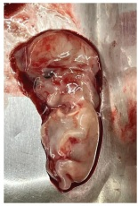
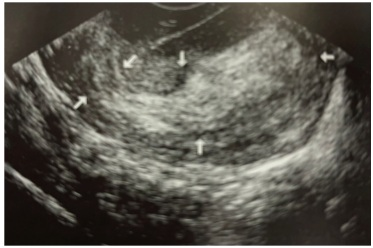
A Expectante.
B AMIU expectante.
C Curetagem puerperal.
D Histeroscopia cirúrgica.
Questão 36 · Modif icações f isiológicas da gestação · Obstetrícia · 4000184129Paciente de 24 semanas de gestação, em consulta de pré-natal refere problema na gengiva com presença de uma bola vermelha e dolorida. Relata frequente sangramento gengival ao escovar os dentes. Ao exame clínico, observa-se a seguinte imagem: Qual é a melhor conduta?

A Orientar higiene bucal.
B Solicitar biópsia.
C Encaminhar para exérese.
D Realizar cauterização.
Questão 37 · Avaliação da vitalidade f etal · Cardiotocograf ia CTB · Obstetrícia · 4000184128Gestante de 25 anos, 3G:2PN, chega ao pronto-socorro referindo dor em hipogástrio há 3 horas. Hoje com 33 semanas e 2 dias de gestação. Ao exame clínico: PA 113x76 mmHg, FC 74 bpm, presença de duas contrações uterinas por 10 minutos de fraca intensidade. Toque vaginal com colo grosso, posterior, pérvio para 3 cm, apresentação cefálica alta e móvel. Após analgesia, refere melhora das dores. Foi feita uma reavaliação do exame obstétrico que não demonstrou evolução do colo uterino, permanecendo com a mesma dilatação. Realiza a cardiotocografia apresentada. Qual é a conclusão desta cardiotocografia?

A Reatividade fetal após estímulo.
B Ausência de movimentação fetal.
C Atividade uterina excessiva.
D Bem-estar fetal.
Questão 38 · Obstetrícia · Assistência ao parto normal · 4000184127Gestante de 25 anos, 3G:2PN, chega ao pronto-socorro referindo dor em hipogástrio há 3 horas. Hoje com 33 semanas e 2 dias de gestação. Ao exame clínico: PA 113x76 mmHg, FC 74 bpm, presença de duas contrações uterinas por 10 minutos de fraca intensidade. Toque vaginal com colo grosso, posterior, pérvio para 3 cm, apresentação cefálica alta e móvel. Após analgesia, refere melhora das dores. Foi feita uma reavaliação do exame obstétrico que não demonstrou evolução do colo uterino, permanecendo com a mesma dilatação. Realiza a cardiotocografia apresentada. Com relação ao caso apresentado acima, qual é a conduta clínica nesse momento?
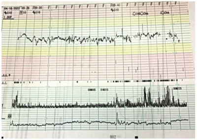
A internar a paciente para inibir trabalho de parto prematuro.
B manter vigilância no Pronto-Socorro por mais 6 horas.
C liberar a paciente para casa com orientação de sinais de alarme.
D solicitar nova vitalidade em 48 horas.
Questão 39 · Estática f etal · Obstetrícia · 4000184126Gestante de 29 anos, 4G:3PN:0A, chega ao Pronto-Socorro Obstétrico trazida pelo SAMU em franco trabalho de parto. Não trouxe a carteira de pré-natal, refere data da última menstruação de 18/02/2022. Ao exame clínico, PA 123x82 mmHg, FC 84 bpm, altura uterina de 35 cm, batimento cardíaco fetal presente e rítmico. Ao toque vaginal, dilatação total, apresentação cefálica e alta, sendo percebida a variedade de posição representada na figura. Qual é a referência percebida ao toque que sinaliza dificuldade do parto vaginal?
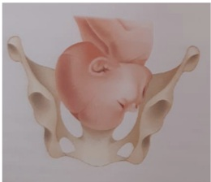
A Raiz do nariz.
B Occipício.
C Bregma.
D Mento.
Questão 40 · Medicina Preventiva · 4000184125Volpe (2011) publicou estudo da correlação das “taxas de cesariana” com as “taxas de mortalidade materna e infantil” através da avaliação de dados o ciais de 193 países. Com base nesse estudo, o gráfico abaixo apresenta a correlação entre a de mortalidade materna De acordo com o gráfico, qual é a conclusão sobre a relação entre a taxa de mortalidade materna e a taxa de cesárea?
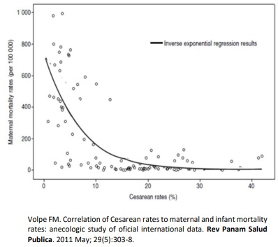
A quanto maior a taxa de cesárea, maior a mortalidade materna.
B quanto maior a taxa de cesárea, menor a mortalidade materna.
C quanto menor a taxa de cesárea, maior a mortalidade materna.
D não há relação entre a taxa de cesárea e a mortalidade materna.
Questão 41 · Síndrome da Apneia Obstrutiva do Sono · Neurologia · Quadro Clínico · 4000184124Homem, 38 anos, tem roncos e sonolência diurna há 2 anos. Refere obstrução nasal e sua esposa diz que, durante a noite, o paciente apresenta episódios em que “para de respirar” e parece que parece estar “engasgado”. Sem antecedentes mórbidos relevantes. O exame clínico é normal, com exceção de IMC = 34 kg/m². Considerando a principal hipótese diagnóstica, qual a terapia clínica de escolha para o caso?
A Aparelho de pressão aérea positiva (CPAP).
B Elevação da cabeceira da cama.
C Atividade física 30 minutos antes de dormir.
D Aparelho intraoral noturno.
Questão 42 · Relação MédicoPaciente · Método Clínico Centrado na Pessoa · 4000184123Mulher, 63 anos, está em acompanhamento ambulatorial por adenocarcinoma de pâncreas com metástases hepáticas e ósseas. Há 6 meses, iniciou segunda linha de quimioterapia não curativa. A despeito do tratamento, sua doença teve rápida progressão durante esse período. Adicionalmente, sua funcionalidade teve uma mudança importante: era totalmente ativa (ECOG 0) e agora, embora consiga manter o autocuidado e a deambulação, está incapaz de realizar suas atividades laborais (ECOG 2). No atual retorno, a paciente questiona sobre as possibilidades de tratamento e a sua inclusão em um estudo clínico para novos medicamentos. Quais ações devem ser adotadas no caso?
A postergar as informações sobre a progressão da doença, pois a perda de funcionalidade da paciente é recente e influencia sua compreensão da gravidade.
B questionar as expectativas da paciente e a sua percepção da doença, para verificar seu grau de entendimento e alinhamento com a expectativa da equipe médica.
C informar que não há eficácia comprovada para outros tratamentos e que, a partir deste momento, há indicação de acompanhamento com a equipe de cuidados paliativos.
D convocar a família para explicar a ausência de resposta aos tratamentos convencionais e ponderar os riscos e benefícios das alternativas experimentais.
Questão 44 · Hanseníase virchowiana · 4000184121Homem, 44 anos, há 9 anos apresenta lesões na pele. No exame clínico, observa-se in ltração difusa da face e orelhas, além de madarose. Há várias pápulas e nódulos in ltrados, de cor eritêmato-acastanhados (imagem). O exame histopatológico de lesão cutânea evidenciou presença de macrófagos espumosos ao redor de filete nervoso. Quais os achados clínico-laboratoriais encontrados na principal hipótese diagnóstica para o caso?
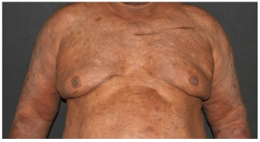
A O exame histopatológico mostra depósitos hialinos e hemorragia na derme, evidenciados pela coloração vermelho-congo.
B O exame histopatológico mostra epidermotropismo com linfócitos atípicos.
C Baciloscopia de lesão cutânea positiva.
D O exame histopatológico mostra granuloma tuberculoide com necrose caseosa.
Questão 45 · Eczema de estase · 4000184120Mulher, 59 anos, apresenta há 4 anos lesões em membros inferiores (imagem). No exame clínico, são observadas varizes de grosso calibre. Há eritema, edema, exsudação e crostas nos terços inferiores de pernas. Também são encontradas hipercromia e induração nos 2/3 inferiores das pernas, bilateralmente. Quais são as principais hipóteses diagnósticas?
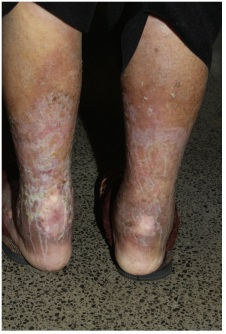
A Erisipela, amiloidose maculosa e linfedema.
B Tinha do corpo, púrpura pigmentosa crônica e esclerodermia cutânea.
C Neurodermatite circunscrita, melanodermia tóxica e líquen escleroso.
D Eczema de estase, dermatite ocre e dermatoesclerose.
Questão 46 · Tromboembolismo Pulmonar TEP · Pneumologia · 4000184119Mulher, 65 anos, chega ao departamento de emergência com queixa de dor em hemitórax esquerdo, com início súbito há 8 horas e piora progressiva. A dor não estava relacionada ao esforço, não tinha irradiação e estava associada à dispneia. A paciente é obesa e trata hipertensão arterial sistêmica com amilodipina. Exame clínico: FC 110 bpm; FR 32 irpm; PA 125x86 mmHg; Sat O₂ 92% em ar ambiente; T 35,9° C. Ausculta respiratória e cardiovascular com MV+ s/RA. BRNF 2T sem sopros. Boa perfusão periférica, pulsos cheios e simétricos nos quatro membros. MID com edema 1+/4+, MIE com edema 3+/4+, com uma diferença de 3,8 cm no diâmetro das duas panturrilhas. Considerando a hipótese diagnóstica, qual é o principal fator de risco para o evento?
A Insuficiência venosa de membros inferiores.
B Idade avançada.
C Internação recente por insuficiência cardíaca ou fibrilação atrial.
D Viagem aérea recente de longa duração.
Questão 47 · Métodos complementares · Cardiologia · Quadro clínico · 4000184118Homem, 62 anos, procura o serviço de emergência com quadro de dispneia e dor torácica, que se iniciaram há 2 meses e vêm evoluindo com piora progressiva. Ao exame clínico, o paciente apresentava diminuição do murmúrio vesicular bilateralmente e estase jugular a 45°. Exame radiológico apresentado. A punção pleural demonstrou líquido exsudativo com predomínio de outras células, provavelmente células neoplásicas. Durante atendimento, o paciente apresentou piora da dispneia e PA 80x40 mmHg. A ultrassonografia cardíaca à beira do leito apresentada. Qual é a conduta imediata?
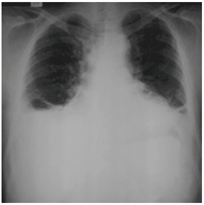
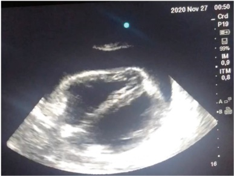
A Trombólise.
B Drenagem torácica.
C Cineangiocoronariografia.
D Pericardiocentese.
Questão 48 · Quadro Clínico · Neurologia · Fatores de Risco e Predisponentes · 4000184117Mulher, 83 anos, é trazida ao pronto-socorro com queixa de sonolência excessiva há três dias. Apresenta antecedente de hipertensão arterial, dislipidemia e síndrome demencial, com dependência parcial para atividades básicas, e total para atividades instrumentais de vida diária. Sua lha conta que, ao longo do último mês, sua mãe se tornou mais apática, apresentou edema progressivo de membros inferiores e, há 1 semana, está confusa, estando há 3 dias bastante sonolenta, com piora no dia de hoje. Ao exame clínico, nota-se que a paciente tem pontuação zero na Richmond e, em alguns momentos, apresenta pensamento desorganizado. Além disso, tem edema de membros inferiores 3+/4+ e apresenta estertores finos em base direita. Considerando as hipóteses clínicas e a linha de cuidado, qual é a alternativa melhor associada ao caso clínico?
A A paciente apresenta
B Deve-se solicitar autorização da filha para tomada de decisão sobre a execução de medidas invasivas, como a entubação orotraqueal.
C Há elementos suficientes para estabelecer que a paciente virá a óbito nas próximas horas ou dias, período este considerado processo ativo de morte.
D A apresentação neurológica do quadro indica progressão da síndrome demencial de base, o que contraindica o uso de antibióticos.
Questão 49 · Intoxicações Exógenas · Síndrome Colinérgica · 4000184116Homem, 55 anos, é trazido ao pronto-socorro após ingerir grande quantidade de uma substância que causou quadro de sudorese profusa, bradicardia, miose, hipotensão e broncorreia. Qual é a substância que apresentaria efeito similar quando ingerida em grande quantidade?
A Loperamida.
B Rivsastigmina.
C Escopolamina.
D Imipramina.
Questão 50 · Anticoagulação oral · Cardiologia · 4000184115Homem, 78 anos, procura a unidade básica de saúde com queixa de palpitações há 4 meses. Nega dispneia, dor torácica o u síncope. Descobriu ser hipertenso há 5 anos, quando teve um quadro de acidente vascular cerebral isquêmico, que não resultou em sequelas no longo prazo. Está em uso de hidroclorotiazida e losartana em doses máximas, associado à aspirina 200 mg/dia. Nega outros antecedentes mórbidos relevantes. Ao exame clínico, pressão arterial 128x82 mmHg. ECG é apresentado. Qual é o plano de cuidado deste paciente?
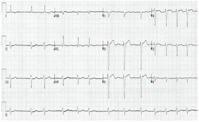
A Introdução de anticoagulantes orais em dose plena.
B Aumento da dose de aspirina para 300 mg/dia.
C Prescrição de amiodarona 200 mg/dia.
D Adição de betabloqueadores cardiosseletivos na dose máxima tolerada.
Questão 51 · Bradiarritmias · Bloqueios · 4000184114Homem, 50 anos, hipertenso, em uso de propranolol 120 mg/dia, procura a unidade de pronto atendimento por palpitação há uma semana. O exame clínico é normal, com frequência cardíaca de 56 bpm. O ECG realizado na unidade de saúde está mostrado a seguir. Qual o ritmo cardíaco mostrado no eletrocardiograma?

A BAV de segundo grau Mobitz I.
B Bradicardia sinusal.
C BAV de primeiro grau.
D BAV de segundo grau Mobitz II.
Questão 52 · Hiperaldosteronismo primário · Cardiologia · 4000184113Homem de 33 anos procurou a unidade básica de saúde pois aferiu pressão arterial em rastreamento oportunístico que resultou em 156x98 mmHg. Nega sintomas ou antecedentes mórbidos relevantes. O diagnóstico de hipertensão foi confirmado após duas consultas agendadas no prazo de 15 dias, sendo 156x96 mmHg a média das medidas de pressão arterial. Desde então, mostrou-se motivado a iniciar prática de atividade física (150 minutos/semana) e redução do s a l alimentar. Prefere não usar medicamentos. Ao discutir o plano de cuidados, além das metas para um estilo de vida saudável, foram combinados encontros mensais pelos próximos três meses para acompanhamento. No primeiro desses encontros, o paciente relatou ter cumprido as metas estabelecidas. Apresentou frequência cardíaca 84 bpm, pressão arterial 154x94 mmHg, índice de massa corpórea 26 kg/m² e restante do exame clínico normal (incluindo fundoscopia). Resultados dos exames solicitados: Creatinina: 0,9 mg/dL; Na K ⁺ 2,9 mEq/L; HDL 50 mg/dL; LDL 124 mg/dL; Triglicérides 110 mg/dL; Glicemia de jejum 92 mg/dL; eletrocardiograma e urina tipo I normais. No segundo encontro, permaneceu aderente às metas de estilo de vida e perdeu 2 kg. Frequência cardíaca 80 bpm, pressão arterial 150 x 92 mmHg, índice de massa corpórea 25,3 kg/m² e restante do exame clínico normal. O novo exame de potássio sérico confirmou o valor de 2,9 mEq/L. Além da reposição de potássio, qual alternativa representa a conduta clínica a ser adotada até o próximo encontro?
A Deve-se realizar investigação adicional para hipertensão secundária e manter exclusivamente as modificações de estilo de vida para controle pressórico.
B Deve-se realizar investigação adicional para hipertensão secundária e iniciar tratamento farmacológico para controle pressórico.
C Não há necessidade de investigação adicional para hipertensão secundária; manter exclusivamente as modificações de estilo de vida para controle pressórico.
D Não há necessidade de realizar investigação adicional para hipertensão secundária; iniciar tratamento farmacológico para controle pressórico.
Questão 53 · Classif icação morf ológica das anemias · Introdução à hemólise · Classif icação f uncional das anemias · 4000184112Mulher de 40 anos procurou ambulatório de clínica médica por apresentar fraqueza há 2 meses. Nega antecedentes mórbidos relevantes e não está usando medicamentos. O exame clínico é normal, com exceção de descoramento de mucosas 2+/4+. A investigação laboratorial inicial identificou hemoglobina de 10,1 g/dL. Qual das alternativas abaixo apresenta a combinação adequada entre achado clínico e diagnóstico etiológico para o caso?
A Promielócitos em esfregaço periférico; deficiência de folato.
B Haptoglobina baixa; deficiência de ferro.
C Aumento na proporção de reticulócitos; hemólise.
D Aumento do volume corpuscular; talassemia major.
Questão 54 · Endocrinologia · 4000184111Homem de 75 anos é acompanhado no ambulatório de clínica médica por insu ciência cardíaca e hipertensão. Está em uso regular de enalapril e carvedilol em doses máximas, até 4 meses atrás, estava clinicamente estável. Desde então, a dispneia passou dos grandes aos médios esforços, com aparecimento de edema de membros inferiores ao nal do dia. Nega febre, alteração do peso ou do padrão de sono. Há quatro dias apresenta palpitação e piora da dispneia, que passou a ocorrer no repouso. No exame clínico, tem frequência cardíaca de 90 bpm (arrítmico), pressão arterial 122x76 mmHg, bulhas arrítmicas e estertores nos em bases pulmonares. O restante do exame clínico é normal. Qual dos exames complementares abaixo deve ser realizado neste momento?
A Angiotomografia de tórax.
B Hormônio tireoestimulante.
C Cineangiocoronariografia.
D Proteína C-reativa.
Questão 55 · Pneumologia · Pneumonite de Hipersensibilidade PH · 4000184110Homem de 50 anos, portador de melanoma metastático para pulmão, fígado e linfonodos, procura atendimento por quadro de 1 semana de dispneia progressiva e tosse; sem febre. Relata estar em uso de imunoterapia com anticorpo monoclonal anti-PDL-1 há cerca de 3 meses, tendo feito a última aplicação há 2 semanas. Ao exame clínico, o paciente apresenta-se taquidispneico, com frequência cardíaca 117 bpm, pressão arterial 110x60 mmHg, frequência respiratória de 32 irpm, saturação de oxigênio em ar ambiente de 85%. Tomografia computadorizada de tórax apresentada. Além da oferta de oxigênio suplementar, qual é a conduta para o caso?
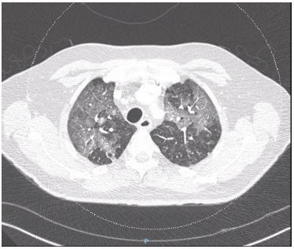
A Internação em unidade de terapia intensiva; pesquisa de vírus respiratórios; corticoterapia em alta dose; antibioticoterapia.
B Internação em enfermaria; avaliação da oncologia para radioterapia; antibioticoterapia.
C Internação em unidade de terapia intensiva; avaliação da oncologia para radioterapia; corticoterapia em baixa dose.
D Internação em enfermaria; pesquisa de vírus respiratórios; corticoterapia em baixa dose e antibioticoterapia.
Questão 56 · Bursites · 4000184109Mulher de 62 anos trabalha cuidando da casa e de dois netos. Há 12 horas notou aumento de volume em região anterior de joelho direito, com dor e calor. Relata febre baixa não aferida. Nega dor em outras articulações ou di culdade para deambular, mas relata di culdade para etir o joelho. Fez atividade doméstica mais intensa nos últimos dias. Nega uso de qualquer tipo de medicamentos ou comorbidades prévias relevantes. Foto do exame clínico articular apresentada. Qual a principal hipótese diagnóstica?
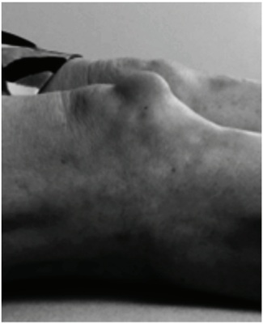
A Fratura patelar.
B Subluxação patelar.
C Artrite.
D Bursite pré-patelar.
Questão 57 · Inf ectologia · 4000184108Paciente de 34 anos, feminina, previamente hígida, deu entrada no pronto-socorro com quadro de cefaleia holocraniana associada a náuseas há quatro dias; febre aferida de 38°C e confusão mental com agitação psicomotora. Refere que, há uma hora, teve episódio de perda de contato com o meio, com olhar xo e movimentos mastigatórios de cerca de 30 segundos de duração. Ao exame clínico: regular estado geral; corada e hidratada; sistemas cardiovascular e pulmonar sem alterações; sem lesões cutâneas; Glasgow 13 (Ao3/MRV4/MRM6); confusa e sonolenta; sem rigidez de nuca; sem papiledema. A ressonância magnética de crânio mostrou aumento de sinal em polo temporal e ínsula à direita. Qual dos exames de líquor abaixo seria compatível com o quadro da paciente?
A 1.200 células; 100 hemácias; linfócitos 10%; monócitos 10%; neutrófilos 80%; proteína 130 mg/dL; glicose 18 mg/dL.
B 100 células; 0 hemácias; linfócitos 10%; monócitos 20%; neutrófilos 70%; proteína 500 mg/dL; glicose 70 mg/dL.
C 30 células; 500 hemácias; linfócitos 50%; monócitos 40%; neutrófilos 10%; proteína 50 mg/dL; glicose 70 mg/dL.
D 200 células; 50 hemácias; linfócitos 40%, monócitos 10%, neutrófilos 50%, proteína 200 mg/dL, glicose 1 mg/dL.
Questão 58 · Neurologia · Mielite Transversa · 4000184107Paciente de 32 anos, sexo feminino, refere: há dez dias – formigamentos em pernas, que ascenderam, chegando ao nível do umbigo; há cinco dias – di culdade para deambular por fraqueza em membros inferiores; há um dia – piora, com quedas. Associadamente, passou a ter di culdade de urinar. No Pronto-Socorro foi constatado bexigoma, tendo sido necessária sondagem vesical de alívio. Ao exame clínico, observa-se paraparesia crural, com sinal de Babinski, reflexos exaltados em membros inferiores e presença de nível sensitivo denso na altura do umbigo. Qual o diagnóstico provável e qual exame complementar deve ser solicitado na emergência?
A Neuroesquistossomose; ressonância magnética de coluna lombo-sacra.
B Degeneração combinada subaguda da medula (mielinose funicular); dosagem sérica de vitamina B12.
C Síndrome de Guillain-Barré; exame do líquor.
D Mielite transversa; ressonância magnética de coluna torácica.
Questão 59 · Transtorno do Humor Bipolar THB · 4000184106Paciente masculino, 20 anos, estudante do 2º ano do curso de economia, é levado ao pronto-socorro psiquiátrico após uma mudança de comportamento nos últimos sete dias. De acordo com os familiares, começou a car progressivamente mais agitado, querendo fazer várias coisas ao mesmo tempo; houve aumento na velocidade da fala, por vezes elaborando frases sem nexo; houve diminuição do sono; e estava alimentando-se muito mal e em pouca quantidade. Relatam também que, há uns quatro meses, o paciente cou muito triste com o falecimento da avó, pois eram muito próximos. Chorou muito e, por semanas, não queria sair do quarto, tendo emagrecido 6 kg. O paciente sempre teve boa saúde e é responsável, bom aluno e sociável. Não tem história prévia de transtorno mental. Antecedentes familiares: mãe, 44 anos, teve depressão depois do nascimento do último lho – que durou mais de um ano, mas “foi passando aos poucos, sem tratamento”; tio materno bebia bastante e cometeu suicídio aos 40 anos de idade. Qual a hipótese diagnóstica provável para o caso descrito acima?
A Transtorno de personalidade
B Transtorno depressivo reativo.
C Transtorno bipolar.
D Intoxicação por estimulantes.
Questão 60 · Miastenia Gravis · Neurologia · Quadro Clínico · 4000184105Mulher de 32 anos é trazida ao pronto-socorro por desconforto respiratório. Refere história de dois meses de queda assimétrica das pálpebras e diplopia de caráter utuante; há um mês com di culdade de deglutição, voz anasalada e re uxo de líquidos pelo nariz. Associadamente, notou fraqueza muscular, com di culdade para pentear os cabelos, elevar os braços, subir escadas e se levantar, especialmente da posição sentada. Há dois dias, notou quadro febril, tosse e dispneia progressivas. No exame de entrada, observa-se pressão arterial 125x70 mmHg, frequência cardíaca 96 bpm rítmico, temperatura axilar 38,3°C, frequência respiratória de 18 irpm, saturação de O2 94%. À ausculta pulmonar, observa–se crepitação em base de pulmão direito. A paciente apresenta ptose palpebral bilateral, di culdade de abduzir o olho direito e de aduzir e elevar o olho esquerdo. As pupilas são isocóricas com 2 mm e fotorreagentes. A voz é anasalada e há dé cit motor de predomínio proximal nos quatro membros. Os reflexos profundos estão presentes e a resposta cutâneo plantar é exora bilateralmente. Não há alterações ao exame de sensibilidade e coordenação. A gasometria arterial mostra: pH 7,28; pO₂ 68 mmHg; pCO₂ 55 mmHg. Radiogra a de tórax com provável broncopneumonia aspirativa. Qual a principal hipótese diagnóstica?
A Meningoencefalite tuberculosa.
B Polirradiculoneurite aguda.
C Neoplasia maligna em tronco encefálico.
D Miastenia gravis.
Questão 61 · Medicina Preventiva · 4000184104Analise os dados da figura a seguir. Carga Viral suprimida: exame de CV, após pelo menos 6 meses do início do tratamento, com valor inferior a 50 cópias/ml registrado no sistema nacional de informação de exames laboratoriais (SISCEL). Em TARV: medicamentos antirretrovirais (SICLOM), nos últimos 100 dias do ano. Retidos: antirretroviral no ano. Vinculados: pessoas que tiveram no ano algum exame de CD4 ou de Carga Viral registrados ao SISCEL ou tiveram dispensa de TARV registrada no SICLOM. Fonte: Qual é a afirmação correta?
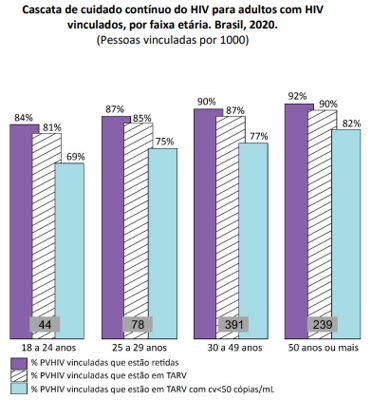
A Entre as pessoas com HIV da faixa etária de 18-24 anos que tiveram uma dispensa de ARV nos últimos 100 dias do ano e tiveram um exame de carga viral após 6 meses de tratamento, 15% não alcançaram supressão viral.
B Entre as pessoas com HIV da faixa etária de 18-24 anos que tiveram algum exame de CD4 ou Carga Viral ou tiveram uma dispensa de ARV no ano, 15% não iniciaram ou não se mantiveram no tratamento ARV.
C Entre as pessoas com 18 ou mais anos, a proporção de diagnóstico de HIV cresce com o aumento da idade.
D Entre as pessoas com 50 ou mais anos infectadas com HIV, a proporção de supressão viral é de 82%.
Questão 62 · Medicina Preventiva · 4000184103Os critérios que caracterizam uma “variável de confusão” são:
A ser um fator de risco para a doença; estar presente na população geral; e estar associada com a exposição de interesse em ambos os expostos e os não expostos.
B estar associada com o desfecho; estar associada com a exposição; e não estar no caminho causal entre a exposição e o desfecho.
C estar associada com o desfecho; estar associada com a exposição de interesse entre aqueles que não apresentam o desfecho; e não estar no caminho causal.
D ser um fator de risco verdadeiro para a doença investigada; estar associada com a exposição; e estar no caminho causal que une a exposição ao desfecho.
Questão 63 · Medicina Preventiva · 4000184102Considere atentamente os dois episódios abaixo envolvendo o sistema de saúde brasileiro: EPISÓDIO 1 pelo SAMU e levado ao atendimento de um grande hospital público. Devido ao seu estado de saúde, é assistido antes de várias pessoas que aguardavam atendimento no pronto-socorro. EPISÓDIO 2 é atendida primeiramente por uma equipe de saúde local e posteriormente removida até a rede hospitalar do Sistema Único de Saúde (SUS) da cidade mais próxima. O atendimento foi viabilizado por um Distrito Sanitário Especial Indígena, d e responsabilidade federal, que mantém serviços voltados especi camente para as necessidades de saúde e para a ocupação geográfica das comunidades indígenas no Brasil. Os dois episódios descritos correspondem a um mesmo princípio fundamental do SUS. Assinale a alternativa que corresponde ao princípio em questão.
A Descentralização.
B Acesso.
C Equidade.
D Hierarquização.
Questão 64 · Medicina Preventiva · 4000184101Nos últimos anos, quando se compara o padrão de despesas com a saúde no Brasil com o de outros países, é correto afirmar:
A no Brasil, a participação do gasto privado no total de gastos com saúde é maior do que em outros países com sistemas universais de saúde.
B embora o Brasil gaste com saúde uma porcentagem do PIB inferior à média de países Europeus, o gasto
C embora seja inferior à média dos países da OCDE, o gasto
D a participação do gasto privado no total de gastos com saúde é maior em países mais ricos, enquanto no Brasil predomina o gasto destinado a ações e serviços públicos de saúde.
Questão 65 · Medicina Preventiva · 4000184100O Brasil é um dos países que mais consome agrotóxicos no mundo, o que caracteriza um sério problema de Saúde Pública e Ambiental. A Organização Internacional do Trabalho (OIT) a rma que, em países em desenvolvimento, os agrotóxicos causam 70 mil intoxicações agudas e crônicas por ano, que evoluem para óbito. Outros mais de sete milhões de casos anuais de doenças agudas e crônicas estão ligadas aos agrotóxicos (CARNEIRO et al., 2015). No âmbito da Regulação e m Saúde no Sistema Único de Saúde (SUS), a Agência Nacional de Vigilância Sanitária (ANVISA) tem uma atribuição específica relacionada ao registro e à autorização de uso e de comercialização de agrotóxicos no Brasil. Assinale a alternativa que corresponde à atribuição da ANVISA.
A Realizar análises de custo-benefício e de custo-efetividade do produto, considerando tanto eventuais danos à saúde quanto benefícios econômicos às atividades agrícolas.
B Elaborar um dossiê de saúde ambiental, no qual é avaliado o potencial poluidor do produto.
C Avaliar a eficiência e o potencial de uso do produto na agricultura por meio de um dossiê agronômico.
D Elaborar um dossiê toxicológico, avaliando quão tóxico é o produto para a população e em quais condições o seu uso é seguro.
Questão 66 · Medicina Preventiva · 4000184099O sistema de saúde brasileiro conta com o subsistema suplementar, no qual atuam mais de 700 operadoras de planos e seguros de saúde privados, cujas atividades são regulamentadas pela Lei n. 9.656 de 1998 e pela Agência Nacional de Saúde Suplementar (ANS). Com relação às regras de funcionamento ou às características do mercado de planos de saúde no Brasil, assinale a alternativa correta.
A Se um usuário de plano de saúde privado for atendido em um hospital público, o SUS deve ser ressarcido financeiramente por esse atendimento, nos limites das coberturas previstas no contrato do plano.
B O reajuste das mensalidades dos planos de saúde é definido anualmente pela ANS e corresponde a um índice único de aumento aplicado a todos os planos individuais, familiares, coletivos e empresariais.
C A maior fatia do mercado de assistência médica suplementar no Brasil corresponde à modalidade de contratação de planos individuais e familiares, que registrou expressivo crescimento em função da pandemia de COVID-19.
D Os seguros de saúde representam o segmento de saúde suplementar com maior número de beneficiários no Brasil, superior à população coberta pelas cooperativas médicas e pelos planos de medicina de grupo.
Questão 67 · Inf ectologia · 4000184098Em 23/07/2022, a Organização Mundial da Saúde (OMS) reconheceu que a disseminação internacional do vírus da Varíola dos Macacos (MPX) constitui uma emergência em saúde pública de interesse internacional. Em relação às características epidemiológicas da epidemia do vírus da Varíola dos Macacos (MPX) de 2022, é correto afirmar que:
A a concentração de casos entre homens que fazem sexo com homens era esperada, considerando o número de parceiros sexuais neste grupo.
B a rápida disseminação em regiões não endêmicas sugere que o MPX já estava circulando de forma não detectada por algum tempo.
C a transmissão ocorre prioritariamente pelo sêmen e por secreções vaginais.
D a variante 1, antiga variante da África Ocidental e considerada uma das mais virulentas, é a responsável pela disseminação global em 2022.
Questão 68 · Medicina Preventiva · 4000184097A Comissão Nacional de Incorporação de Tecnologias no Sistema Único de Saúde (CONITEC) tem por objetivo assessorar o Ministério da Saúde nas atribuições relativas à incorporação, exclusão ou alteração de tecnologias em saúde no Sistema Único de Saúde (SUS). Assinale a alternativa que melhor descreve o conteúdo exigido nos relatórios de recomendação sobre as tecnologias analisadas.
A Evidências científicas sobre eficiência, implicações econômicas e aspectos organizacionais e ambientais.
B Evidências científicas sobre eficácia, segurança e aspectos organizacionais e ambientais.
C Evidências científicas sobre eficácia, acurácia, efetividade e segurança, bem como custo-efetividade.
D Evidências científicas sobre eficácia, acurácia, efetividade e segurança, bem como custo-efetividade e impacto orçamentário.
Questão 69 · Medicina Preventiva · 4000184096O Zolgensma é uma terapia gênica indicada para o tratamento de atro a muscular espinhal (AME), uma doença neurodegenerativa rara e sem cura que, sem tratamento, pode levar a criança à morte ou à dependência de respirador artificial antes dos 2 anos de idade. Para que o Zolgensma seja disponibilizado de forma gratuita e universal no Sistema Único de Saúde (SUS) é necessário que:
A a Agência Nacional de Vigilância Sanitária (ANVISA) avalie a eficácia, a segurança e o custo-efetividade desta tecnologia e autorize sua comercialização no Brasil.
B a Comissão Nacional de Incorporação de Tecnologias no SUS (CONITEC) avalie a efetividade, o custo- efetividade e os impactos orçamentários desta tecnologia, comparando-a aos tratamentos já incorporados ao SUS.
C a Comissão Nacional de Incorporação de Tecnologias no SUS (CONITEC) avalie a eficácia e a segurança desta tecnologia e autorize sua comercialização no Brasil.
D a Agência Nacional de Vigilância Sanitária (ANVISA) avalie a efetividade e os impactos orçamentários desta tecnologia, comparando-a aos tratamentos já incorporados ao SUS.
Questão 70 · Populaçãoalvo e intervalo · 4000184095Jan é uma pessoa não binária transmasculina. Tem 28 anos e procura a UBS para a realização de Papanicolau (colpocitologia oncótica). Identi ca-se como homossexual, iniciou atividade sexual aos 22 anos, com penetração vaginal. Faz uso de testosterona injetável e apresenta ressecamento vaginal. Neste caso, a colpocitologia oncótica:
A está recomendada; o estrógeno tópico está contraindicado; e a coleta deve ser realizada com lubrificante à base de água.
B está recomendada; deve-se utilizar um espéculo de menor tamanho; o estrógeno tópico está contraindicado, assim como o uso de lubrificante, pelo risco de alterar o resultado do exame.
C está recomendada; pode-se prescrever estrógeno tópico vaginal alguns dias antes e lubrificante à base de água no momento da coleta.
D não está recomendada, pois se refere a alguém com disforia de gênero; neste caso, o desconforto gerado pelo exame clínico seria maior que o risco de câncer de colo de útero nessa população.
Revisar: possível letra faltando em enunciado
Questão 71 · Medicina Preventiva · 4000184094Adolescente de 17 anos apresenta resultado positivo para gravidez. Refere que tem um namorado e utiliza preservativo em todas as relações. Há seis semanas, após uma festa, estava alcoolizada e seu namorado teve relação sexual com ela, sem preservativo, desacordada. Ela tem medo de ter uma gestação e não a desejaria neste momento de sua vida. Qual a melhor conduta nesta consulta?
A Explicar sobre a situação de violência sexual e a possibilidade de aborto legal. Orientar a realização do boletim de ocorrência para poder notificar a violência.
B Iniciar o pré-natal, conversar com a paciente a importância de comunicar aos seus responsáveis a gravidez e a possibilidade de violência sexual.
C Explicar sobre a situação de violência sexual e a possibilidade de aborto legal. Notificar violência e decidir plano de cuidado com a paciente.
D Iniciar o pré-natal, avaliar se realmente houve consentimento ou não. Notificar a violência a partir de decisão conjunta com a paciente.
Questão 72 · Medicina Preventiva · 4000184093Jéssica, de 25 anos, e seu médico desenvolvem o seguinte diálogo durante uma consulta na Unidade Básica de Saúde: - Médico: - Jéssica: - Médico: - Jéssica: - Médico: - Jéssica: componentes automotivos e faço faculdade de Contabilidade à noite. Chego em casa às 23 horas, ou até mais tarde, e saio às 6 horas da manhã. Faço isso há 2 anos, acho que estou acostumada. Quais as técnicas de comunicação utilizadas pelo médico?
A Iniciou a conversa com uma pergunta aberta, deixando a paciente falar sem interrompê-la; utilizou técnicas de encorajamento verbal curto.
B Iniciou a consulta por meio de encorajamentos verbais curtos a fim de direcionar o diálogo à hipótese diagnóstica; realizou técnicas de paráfrase.
C Utilizou a técnica de reflexão em espelho para demonstrar empatia; realizou técnicas de paráfrase.
D Iniciou a conversa com uma pergunta focal, deixando a paciente falar livremente; utilizou técnicas de encorajamento verbal curto.
Questão 73 · Medicina Preventiva · 4000184092O gráfico a seguir apresenta a tendência de diagnósticos e a de mortalidade por câncer de tireoide. Qual o conceito e sua respectiva definição que explicam a relação entre as curvas de mortalidade e a do diagnóstico do câncer de tireoide apresentadas no gráfico?
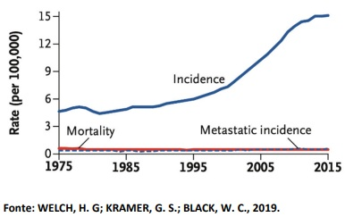
A Sobrediagnóstico; refere-se ao rastreamento com resultado positivo, mas cujo diagnóstico não é confirmado por exames complementares.
B Sobrediagnóstico; refere-se a uma condição corretamente diagnosticada, mas que não causaria sintomas ou morte.
C Falso positivo; refere-se a uma condição corretamente diagnosticada, mas que não causaria sintomas ou morte.
D Falso positivo; refere-se ao rastreamento com resultado positivo, mas cujo diagnóstico não é confirmado por exames complementares.
Questão 74 · Medicina Preventiva · 4000184091Homem, 35 anos, previamente hígido. Iniciou com queixa de episódios de palpitações, associadas à sensação de falta de ar, perda de apetite e desconforto no peito. Nega tristeza, desânimo, fadiga, irritabilidade ou nervosismo. Não associa o quadro a nenhum evento recente em sua vida. Diz estar tranquilo, menos estressado, agora que saiu do emprego. Tem preocupação de ser algum problema no coração, pois seu tio morreu de infarto aos 75 anos. Recentemente passou em consulta médica, tendo recebido a orientação de que não era nada grave. Fez eletrocardiograma, TSH. Todos os resultados foram normais, mas Carlos continua com a queixa. A esposa diz que ele costuma apresentar esses sintomas quando se senta para fazer as contas da família ou quando recebe alguma conta para pagar. Ele não tem história pessoal nem familiar de transtorno mental. Assinale a alternativa que apresenta o registro adequado para o item de avaliação do SOAP desta consulta – de acordo com o Registro Orientado por Problemas –, assim como uma intervenção no atendimento.
A Distúrbio ansioso/estado de ansiedade; intervenção: – Posso prescrever propranolol, um remédio para diminuir a batedeira, você concorda?
B Transtorno do pânico; intervenção: – Como excluímos problemas do coração, você acha que poderia ser algo psicológico?
C Sensação de ansiedade/nervosismo/tensão; intervenção: – Não me parece ser nada grave, concordo com o cardiologista, seus exames estão normais.
D Palpitações; intervenção: – Você acha que seus sintomas podem ter relação com o que sua esposa relatou?
Questão 75 · Medicina Preventiva · 4000184090Qual o tipo de prevenção realizada e o nível de atenção à saúde nos cenários a seguir: I. Criança com transtorno global do desenvolvimento participando de grupo no Centro de Apoio Psicossocial Infanto Juvenil (CAPS-IJ), para integração comunitária. II. Pessoa que teve relação sexual sem preservativo recebendo Pro laxia Pós-Exposição (PEP) para HIV em uma Unidade de Pronto-Atendimento (UPA). III. Clínico geral, que acompanha o paciente em consultório particular, orientando que não há necessidade de solicitar exame de vitamina D para o
A I. Prevenção terciária, atenção secundária; II. Prevenção primária, atenção secundária; III. Prevenção quaternária, atenção primária.
B I. Prevenção primária, atenção primária; II. Prevenção secundária, atenção primária; III. Prevenção quaternária, atenção secundária.
C I. Prevenção terciária, atenção terciária; II. Prevenção primária, atenção primária; III. Prevenção primária, atenção secundária.
D I. Prevenção primária, atenção primária; II. Prevenção secundária, atenção secundária; III. Prevenção primária, atenção primária.
Questão 76 · Medicina Preventiva · 4000184089De acordo com a Política Nacional de Promoção da Saúde, são exemplos de ações de promoção da saúde:
A desarmamento da população; incentivo à cultura popular e a manifestações artísticas; vacinação.
B incentivo ao aleitamento materno; legislação para controle do sódio nos alimentos industrializados; medida de peso e altura na puericultura.
C educação sobre autocuidado com o corpo; uso de preservativo nas relações sexuais; sorologias para Infecções Sexualmente Transmissíveis.
D redução da poluição urbana; orientações individuais para incentivo à atividade física; políticas de garantia da diversidade e dos direitos humanos.
Questão 77 · Medicina Preventiva · 4000184088O câncer de mama (CM) é um importante problema de saúde pública. A identificação e o melhor gerenciamento clínico das pacientes com alto risco de apresentar câncer de mama é importante para reduzir a morbidade e a mortalidade causadas pela doença. A maioria dos fatores de risco genéticos para o CM foi identi cada em mulheres de ascendência europeia e asiática; contudo, os dados genéticos sobre mulheres latinoamericanas são escassos. Um estudo examinou variantes genéticas em regiões de regulação gênica, incluindo locais de ligação do microRNA (miR), como potenciais fatores de risco para o CM em 2.045 mulheres latinoamericanas. Os resultados obtidos são mostrados na tabela abaixo. Dentre as alternativas abaixo, qual representa uma das conclusões do estudo?
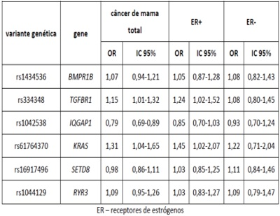
A Nenhuma variante genética está associada à suscetibilidade ao CM entre as mulheres ER+.
B Apenas as variantes genéticas nos genes TGFBR1 e KRAS aumentam o risco de CM total.
C A variante genética no gene IQGAP1 é um fator de proteção para o CM ER-.
D A variante com maior efeito sobre o CM total foi a rs1042538.
Questão 78 · Medicina Preventiva · 4000184087No início da pandemia de COVID-19, na ausência de alternativas terapêuticas especí cas, deu-se ênfase ao reposicionamento de fármacos já utilizados para outras indicações como possibilidades de tratamento. Uma dessas drogas foi a Ivermectina. No sentido de avaliar a e cácia dela na proteção contra o agravamento do quadro clínico, foi realizado um ensaio clínico, com 490 pacientes com quadros leves ou moderados de COVID-19, confirmados por PCR. Dentre eles, 249 receberam o tratamento de suporte padrão para COVID-19 (grupo controle) e 241 receberam o tratamento padrão mais 0,4 mg/kg/dia de Ivermectina, durante 5 dias (grupo experimental). Os resultados estão resumidos na tabela abaixo. De acordo com as informações, pode-se afirmar que:
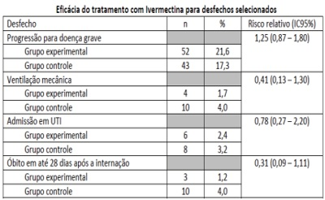
A a Ivermectina foi eficaz na redução dos óbitos.
B a Ivermectina foi eficaz para os desfechos de maior gravidade.
C não se observou a eficácia da Ivermectina para nenhum dos desfechos.
D não é possível qualquer conclusão a partir destes resultados.
Revisar: possível letra faltando em enunciado
Questão 79 · Medicina Preventiva · 4000184086Um estudo de caso-controle foi realizado com adolescentes europeus maiores de 16 anos, com o objetivo de investigar a associação entre p o r bullying relacionados ao corpo, peso ou aparência) e na tabela sobre “Associação entre vitimização por Considerando estes dados, indique a alternativa correta.
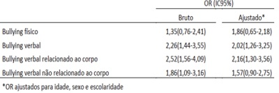
A Ser vítima de “
B Ser vítima de qualquer um dos tipos de
C Ser vítima de qualquer um dos tipos de “
D Não é possível chegar a conclusões sobre a associação entre vitimização por
Questão 80 · Medicina Preventiva · 4000184085Em 2020, o Instituto Nacional do Câncer (INCA) estimou 40.990 novos casos e 20.245 óbitos devido ao câncer colorretal no Brasil. Embora tenham ocorrido avanços na detecção precoce em vários municípios, há falhas, desde a atenção básica, no encaminhamento de pacientes para pesquisa de sangue oculto ou colonoscopia. Mesmo após rastreados os tumores de cólon e reto, muitos pacientes têm di culdade de acessar a atenção especializada, inclusive quando há indicação de cirurgia, radioterapia ou quimioterapia. Neste caso, qual princípio do SUS está sendo ignorado?
A Universalidade.
B Hierarquização.
C Integralidade.
D Regionalização.
Questão 81 · Tratamento · Pediatria · 4000184084Paciente de 7 anos, sexo masculino, com antecedente de asma em uso de medicação contínua. Estava brincando no parquinho quando começou a sentir dor intensa no braço esquerdo. Após cerca de 30 minutos, começou a apresentar tosse, dor abdominal, vômitos e diarreia. Levado ao pronto atendimento, foi colocado sob fonte de oxigênio, sob monitorização e um acesso periférico foi obtido. Ao exame clínico, estava em regular estado geral, FC: 145 bpm, FR: 34 irpm, PA: 82x30 mmHg, Saturação 92% em ar ambiente, ausculta cardíaca sem alterações e ausculta pulmonar com sibilos difusos. Na exposição, foi notada a seguinte lesão: Além de oxigênio e expansão volêmica, qual a conduta a ser prontamente realizada?
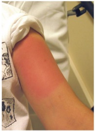
A Bloqueador H1 e H2; corticosteroide e adrenalina (1:1.000) endovenosos.
B Adrenalina (1:1.000) intramuscular; elevação dos membros inferiores.
C Soro antiaracnidico 3 ampolas e morfina endovenosos; bloqueio local.
D Antiescorpiônico endovenoso 2-3 ampolas; alfa-1 bloqueador oral.
Questão 82 · Objetos não Traumáticos no Esôf ago · Ingestão de Corpo Estranho · 4000184083Paciente de 1 ano, sexo masculino, é trazido ao pronto atendimento após ter engolido uma moeda, há cerca de 30 minutos. Ao exame clínico, paciente em bom estado geral, sem sinais de desconforto respiratório, apresentando di culdade de engolir saliva e engasgos. Alimentou-se a última vez há 2 horas. Foi realizada radiografia de tórax com a imagem apresentada. Qual a conduta a ser realizada?
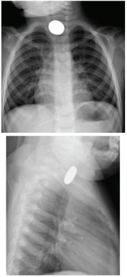
A Endoscopia digestiva alta após jejum apropriado e em até 24 horas.
B Endoscopia digestiva alta em até 2 horas.
C Observação domiciliar com radiografia de tórax a cada 3 dias.
D Observação hospitalar com radiografia de tórax diária.
Questão 84 · Episódio hipotônicohiporresponsivo · 4000184081Paciente de 2 meses, sexo masculino, foi admitido no pronto atendimento após mãe ter notado que ele estava com os lábios arroxeados. Na admissão, encontrava-se arresponsivo, com perda de tônus muscular e com respiração super cial e hipoxemia, tendo sido prontamente iniciadas ventilações assistidas. O paciente havia recebido as imunizações previstas no calendário vacinal há cerca de 5 horas e teve febre precedendo o quadro. Após cerca de 5 minutos de suporte ventilatório, o paciente apresentou recuperação da respiração e do tônus, não sendo necessária entubação orotraqueal. Ao exame de reavaliação, estava corado, hidratado, FC: 150 bpm, FR 36 irpm, P A 73x40 mmHg, pulsos presentes e simétricos, tempo de enchimento capilar de 2 segundos, com abertura ocular espontânea. Restante do exame clínico sem alterações. Com relação à investigação do evento apresentado, podemos afirmar que:
A estão indicados eletrocardiograma na internação e eletroencefalograma ambulatorial.
B está indicado ultrassom transfontanela ou ressonância magnética de crânio.
C está indicada coleta de liquor ampliado com pesquisa de
D não há necessidade de investigações adicionais.
Questão 85 · Pediatria · Tratamento · 4000184080Paciente de 9 anos, sexo feminino, portadora de brose cística pancreato-insu ciente foi admitida no pronto- socorro queixando-se de tosse com aumento da expectoração de aspecto esverdeada, há uma semana; hoje, com pequena quantidade de sangue e sem febre associada. Em culturas prévias de escarro, apresenta colonização crônica para d e oxigênio domiciliar, 1 L/minuto e nos últimos dias precisou aumentar para 2L/minuto. Ao exame clínico, paciente mantendo estado geral de base, alerta, hidratada, taquidispneica moderada, com crepitações difusas à ausculta. Saturação 94% em oxigênio 2L/minuto. Estável hemodinamicamente. A radiogra a de tórax atual ( figura 1) e no momento da alta na internação anterior (figura 2) estão apresentadas. A paciente foi internada para suporte clínico com coleta de nova cultura de escarro. Com relação ao uso de antimicrobianos, podemos afirmar que a conduta adequada é:
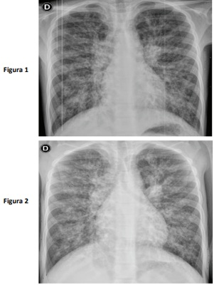
A introduzir vancomicina, ceftriaxone e metronidazol.
B introduzir linezolida, ceftazidima e amicacina.
C guardar identificação do agente na cultura atual para início do antibiótico.
D não há indicação de antimicrobianos neste momento.
Revisar: possível letra faltando em enunciado
Questão 86 · Quadro clínico da leucemia linf oide aguda LLA · Síndrome de Lise Tumoral SLT · 4000184079Síndrome de Lise Tumoral Paciente de 7 anos, previamente hígido, apresentando febre diária há 7 dias, prostração, dor abdominal, vômitos e di culdade para respirar. Passou em atendimento médico há 3 dias e, após realização do exame de imagem, recebeu alta com prescrição de amoxicilina 50 mg/kg/dia por 7 dias. Segue com manutenção dos sintomas e queixa-se de diminuição da diurese. Ao exame clínico, REG, pálido, mucosas secas, FC 165 bpm, FR 40 irpm, saturação 93% em ar ambiente, PA 100x50 mmHg, ausculta pulmonar diminuída em base esquerda com crepitações bilaterais, tiragem subdiafragmática e intercostal. Exames iniciais apresentados. Para definir as medidas de estabilização a serem instituídas para este paciente no momento, qual(is) exame(s) deve(m) ser acrescentado(s)?
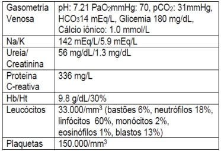

A Contagem celular diferencial e cultura de líquido pleural.
B Pesquisa de esquizócitos em sangue periférico.
C Lactato desidrogenase, fósforo e ácido úrico séricos.
D Teste rápido molecular para micobactéria.
Questão 87 · Nef rologia · 4000184078Paciente de 8 anos, sexo feminino, admitida no pronto-socorro com queixa de edema em face e membros inferiores e redução da diurese há cerca de uma semana. Ao exame clínico, regular estado geral, hidratada, corada. Notado edema em face e membros inferiores, FC 108 bpm, FR 23 irpm, PA 138x94 mmHg, restante do exame sem alterações. Sorologias negativas para HIV e hepatites. Resultados dos exames iniciais apresentados. Podemos afirmar que a paciente tem indicação de:
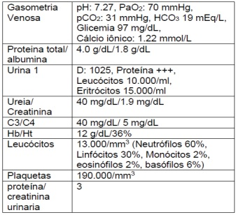
A biópsia renal após 8 semanas, caso não responda ao corticoide.
B iniciar corticoterapia sem necessidade de investigações adicionais.
C biópsia renal após 8 semanas, caso o complemento não normalize.
D ampliar investigação de causas secundárias.
Questão 88 · Atresia da Via Biliar · Cirurgia · 4000184077Paciente de 10 meses, sexo masculino, portador de atresia de vias biliares com portoenterostomia prévia, porém sem melhora significativa da drenagem biliar, foi trazido ao departamento de emergência por ter apresentado três episódios de fezes muito escuras e malcheirosas (Figura A). O responsável também notou que o lactente está mais irritado e com aumento do volume abdominal. Nega febre ou outros sintomas associados. Ao exame clínico, regular estado geral, descorado, ictérico. FC 130 bpm, FAR 48 irpm, PA 82x56 mmHg, pulsos amplos, tempo de enchimento capilar inferior a 1 segundo. Ausculta cardíaca e pulmonar sem alterações, abdome com percussão maciça, tenso e distendido, conforme imagem. Além de jejum e antibiótico, indique a conduta imediata indicada para a complicação apresentada.

A Realizar shunt portossistêmico transjugular.
B Iniciar infusão de vasoconstritor esplâncnico.
C Expandir com soro fisiológico 40–60 mL/kg.
D Remover aderências por cirurgia laparoscópica.
Questão 89 · Teste da orelhinha · 4000184076Recém-nascido do sexo masculino, de 15 dias de vida, comparece à Unidade Básica de Saúde para consulta de rotina. A mãe tem 40 anos, é quartigesta com três cesarianas anteriores, hipertensa crônica, recebeu assistência pré-natal adequada, tendo apresentado diabetes gestacional controlada com dieta. Não há antecedente familiar de surdez permanente e os pais não são consanguíneos. A criança nasceu com 37 semanas e 2 dias de idade gestacional, de parto cesariano com peso de 2.700 g, APGAR 7/9/10, permanecendo internada devido à icterícia neonatal tratada com fototerapia. Recebeu alta da maternidade no quinto dia de vida, com icterícia zona II de Krammer, sem outras alterações ao exame clínico. Assinale a alternativa correta considerando o caso acima.
A O recém-nascido não apresenta indicador de risco para perda auditiva e deve realizar exame de potenciais evocados auditivos do tronco encefálico até 30 dias de vida.
B O recém-nascido não apresenta indicador de risco para perda auditiva e deve realizar exame de emissões otoacústicas até 30 dias de vida.
C O recém-nascido apresenta indicador de risco para perda auditiva e deve realizar exame de emissões otoacústicas até 30 dias de vida.
D O recém-nascido apresenta indicador de risco para perda auditiva e deve realizar exame de potenciais evocados auditivos do tronco encefálico até 30 dias de vida.
Questão 90 · Toxoplasmose congênita · Rastreamento na gestação · 4000184075Recém-nascido a termo, adequado para idade gestacional, lho de mãe hígida com pré-natal adequado, ultrassom morfológico normal. Sorologia de toxoplasmose com 7 semanas de gestação: IgM (método elisa) positivo, IgG positivo, com alta avidez. Exame clínico normal ao nascimento. A conduta recomendada é:
A realizar avaliação de fundo de olho, ultrassonografia transfontanela e abdominal, hemograma, punção lombar e sorologias do recém-nascido, antes de indicar o tratamento.
B coletar sorologia para toxoplasmose do sangue do cordão e indicar o tratamento dependendo do resultado.
C iniciar tratamento com sulfadiazina, pirimetamina e ácido folínico por um ano, independentemente do resultado de exames.
D realizar cuidados de rotina, não havendo necessidade de investigação diagnóstica ou de tratamento do recém- nascido.
Questão 91 · Teste do pezinho · Erros inatos do metabolismo · 4000184074Mãe de 28 anos, primigesta, sem comorbidades, há 24 horas deu à luz a um recém-nascido a termo, adequado para a idade gestacional. O pré-natal foi adequado e sem intercorrências. O primeiro exame clínico completo do recém-nascido não apresentou alterações. A mãe refere preocupação com relação à investigação de fenilcetonúria, pois tem histórico familiar da doença. Ela insiste na realização imediata de exames que identifiquem a doença. Com relação ao exame de triagem para a doença em questão, está correto afirmar:
A deve ser solicitado ambulatorialmente, dado que este erro inato do metabolismo não tem seu curso modificado por intervenções específicas.
B deve ser realizado logo após o nascimento e antes da introdução de leite materno ou fórmula, a fim de evitar lesão neurológica irreversível.
C deve ser realizado após 48 horas do nascimento, pois é necessário que a criança tenha sido alimentada com uma quantidade suficiente de proteína.
D não está indicado para este recém-nascido cujo peso é normal e cujo exame clínico não evidencia traços de doença genética.
Questão 92 · Icterícia neonatal · 4000184073Um recém-nascido (RN) do sexo masculino, com 39 semanas e 4 dias de gestação e peso de nascimento de 3.200 g, apresenta, com 40 horas de vida, icterícia que se estende até a raiz de coxas. Tipagem sanguínea da mãe: A, Rh positivo, com Coombs indireto (pesquisa de anticorpos irregulares) positivo. Tipagem sanguínea do RN: O, Rh negativo, com Coombs direto (teste da antiglobulina direto) negativo. Coletados os exames, a bilirrubina indireta (BI) foi de 11,1 mg/dL, a bilirrubina direta (BD) de 0,7 mg/dL, Hemograma com hemoglobina de 18,1 g/dL, com presença de hemácias fragmentadas e dosagem de G6PD (Glicose-6 fosfato desidrogenase) com metade do valor considerado limite inferior da normalidade. Qual é a classificação da icterícia pelos critérios de Kramer e qual é a conduta imediata?
A Zona IV; observação clínica e nova coleta de bilirrubina em 6 horas.
B Zona IV; fototerapia.
C Zona III; observação clínica e nova coleta de bilirrubina em 12 horas.
D Zona III; fototerapia.
Questão 93 · Pediatria · Abordagem da Crise Febril · 4000184072A mãe de uma lactente do sexo feminino de 18 meses de idade refere que, há 15 dias, sua lha apresentou um episódio de crise convulsiva tônico-clônica generalizada, com duração de 8 minutos; o quadro foi acompanhado de febre de 38,5°C. Procurou Pronto Atendimento na ocasião e, após 6 horas em observação, foi dada alta hospitalar com medicação apropriada para o tratamento de otite média aguda. A criança nunca havia apresentado episódio convulsivo até então e não voltou a apresentar novas crises. Nasceu a termo, sem intercorrências no período perinatal e a mãe nega doenças relevantes prévias. Na consulta atual, apresenta exame clínico normal. Qual a conduta neste momento?
A Realização de tomografia computadorizada do crânio.
B Prescrição de medicação antiepiléptica profilática.
C Solicitação de exame eletroencefalográfico.
D Observação clínica em consultas pediátricas de rotina.
Questão 94 · Calendário inf antil · 4000184071Lactente do sexo masculino de 4 meses e 10 dias é levado à Unidade Básica de Saúde para atualização da imunização. Recebeu somente as vacinas administradas na maternidade (BCG e Hepatite B). Nasceu de parto cesariano, com 35 semanas de idade gestacional, apresenta paralisia cerebral e sibilância recorrente desde o primeiro mês de vida. Hoje está no 5º dia de uso de amoxicilina, prednisolona e broncodiltador para tratamento de uma otite média aguda associada a broncoespasmo. Qual vacina não deverá ser administrada hoje?
A Pentavalente.
B Pneumococo.
C Rotavírus.
D Poliomielite.
Questão 95 · Hipertensão arterial HAS em crianças e adolescentes · Pediatria · Diagnóstico Nutricional · 4000184070Em consulta médica de rotina, um menino previamente hígido, de 10 anos e 6 meses de idade, apresenta peso de 40 kg e estatura de 1,30 m. Foram realizadas três medidas da pressão arterial sob condições adequadas, obtendo-se o valor médio de 100x70 mmHg em todas as aferições. De acordo com as Curvas de Referência da OMS para IMC e altura por idade e sexo, e segundo a 7ª Diretriz Brasileira de Hipertensão Arterial (tabelas acima), este paciente apresenta:

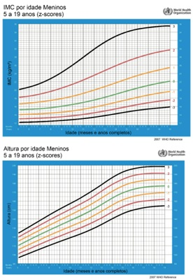
A sobrepeso, estatura normal e pressão arterial elevada.
B obesidade, baixa estatura e pressão arterial elevada.
C obesidade, estatura normal e pressão arterial normal.
D sobrepeso, risco de baixa estatura e pressão arterial normal.
Questão 96 · Reações adversas · 4000184069Em consulta de rotina, a mãe de um lactente de 35 dias de vida encontra-se preocupada com o aparecimento de uma “ferida” no local da aplicação da vacina BCG, há 4 dias. A criança nasceu a termo, de parto normal, pesando 2.980 g, medindo 49 cm de comprimento, sem intercorrências no período perinatal. Na maternidade, recebeu as vacinas BCG e Hepatite B. Está em aleitamento materno exclusivo, ganhando 28 g de peso ao dia. Ao exame clínico, nota-se a presença de uma úlcera de 0,8 cm de diâmetro localizada na inserção inferior do músculo deltoide direito, sem saída de secreção e de gânglio axilar homolateral, indolor, de consistência broelástica, móvel, sem sinais ogísticos, medindo 2,5 cm. Sem outras alterações nos demais aparelhos e sistemas. Qual a conduta para este caso?
A Prescrição de isoniazida.
B Acompanhamento clínico.
C Introdução de cefalexina.
D Punção ganglionar.
Questão 98 · Impetigo bolhoso · Dermatologia · 4000184067Lactente de 9 meses é levado em consulta na Unidade Básica de Saúde apresentando lesões papulares há 3 dias, que evoluíram conforme imagem abaixo. Mãe refere que há rotura espontânea das lesões. Sem febre associada ou outras lesões. Em relação à principal hipótese diagnóstica, é possível afirmar que o agente etiológico causador é o mesmo agente da:
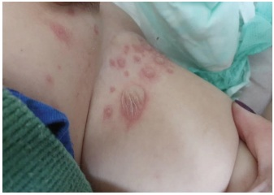
A escarlatina.
B erisipela.
C candidíase.
D síndrome da pele escaldada.
Questão 99 · Manejo das crises álgicas · Síndrome torácica aguda · 4000184066Paciente de 9 anos, sexo masculino, asmático e portador de anemia falciforme, está internado na enfermaria da pediatria devido ao quadro de exacerbação asmática, associada à infecção das vias aéreas superiores. Na admissão, apresentava sibilos difusos, saturação 92% em ar ambiente, desconforto respiratório leve/moderado, com exame de imagem normal. No segundo dia de internação hospitalar, o paciente começou a se queixar de piora da falta de ar, dor em membros inferiores e na região torácica, de forte intensidade (nota 9/10 na escala numérica de dor). Sem febre ou outros sintomas associados. Ao exame clínico, encontra-se hidratado, descorado 2+, com saturação de 92% em Venturi 50%, FC: 90 bpm, FR: 32 irpm, PA: 96x50 mmHg; apresenta desconforto moderado com ausculta mantida em relação ao último exame. Sem febre associada. Frente aos novos sintomas apresentados, qual a conduta indicada para o paciente acima?
A Iniciar opioide; reavaliar necessidade de nova dose em 30 minutos; repetir exame de imagem pulmonar.
B Iniciar analgésico simples paracetamol/dipirona; reavaliar resposta após 1–2 horas; não repetir exame de imagem pulmonar.
C Iniciar anti-inflamatório não hormonal; reavaliar resposta após 30 minutos; não repetir exame de imagem pulmonar.
D Iniciar metadona e evitar opioide; repetir exame de imagem pulmonar.
Questão 100 · Pneumonias de repetição · Pneumonia aspirativa · Pediatria · 4000184065Paciente de 3 anos, sexo masculino, com antecedente de encefalopatia hipóxico-isquêmica, portador de gastrostomia e traqueostomia, foi internado na enfermaria devido ao quadro de pneumonia à direita. O paciente tem antecedente de epilepsia, em uso de ácido valproico, com bom controle das crises, e pneumonias de repetição, com diversas internações no último ano. Durante a internação atual, o paciente foi avaliado por equipe de fonoaudiologia, que identi cou distúrbio de deglutição e sialorreia. Qual das alternativas abaixo contém medicações que devem ser adicionadas às de uso contínuo, com o objetivo de reduzir a recorrência destes quadros pulmonares?
A Amoxicilina em dose profilática.
B Pró-cinético e bloqueador H2.
C Colírio de atropina via oral.
D Benzodiazepínicos de absorção lenta.
Questão 101 · Reumatologia · Osteoartrite OA · Líquido Sinovial · 4000184064Caso 1 Mulher, 65 anos, queixa-se de dor crônica em joelhos quando anda, com piora ao longo do dia. Nega febre ou perda de peso. Apresenta antecedente de diabetes, dislipidemia e hipertensão, em controle clínico regular. No exame clínico, encontra-se com índice de massa corpórea de 32 kg/m² e hipotro a dos quadríceps bilateralmente. Há aumento de volume dos joelhos com crepitações na exão ativa e discreto varismo. No joelho direito, há leve aumento de temperatura e derrame discreto. Exames complementares mostraram hemograma sem alterações e proteína C-Reativa de 8 mg/L. Quais são as características do líquido sinovial compatíveis com a principal hipótese diagnóstica para o caso?
A Viscosidade: Diminuída
B Viscosidade: Alta
C Viscosidade: Alta
D Viscosidade: Diminuída
Questão 102 · Choque · 4000184063Caso 1 Mulher, 65 anos, queixa-se de dor crônica em joelhos quando anda, com piora ao longo do dia. Nega febre ou perda de peso. Apresenta antecedente de diabetes, dislipidemia e hipertensão, em controle clínico regular. No exame clínico, encontra-se com índice de massa corpórea de 32 kg/m² e hipotrofia dos quadríceps bilateralmente. Há aumento de volume dos joelhos com crepitações na exão ativa e discreto varismo. No joelho direito, há leve aumento de temperatura e derrame discreto. Exames complementares mostraram hemograma sem alterações e proteína C-Reativa de 8 mg/L. Três meses após a consulta, a paciente foi atendida em pronto atendimento municipal e encaminhada ao pronto-socorro de hospital terciário por disúria, dor lombar e febre há 3 dias. Não tem antecedentes relevantes. O exame clínico inicial apresentou regular estado geral, PA 80x42 mmHg, FC 120 bpm, T axilar 38,4ºC. Encontrava-se confusa, com pontuação na escala de coma de Glasgow de 12 e má perfusão periférica. Semiologia pulmonar normal. Apresentava posição antálgica e dor à punho-percussão lombar. Posteriormente, a paciente foi transferida à Unidade de Terapia Intensiva. Durante as primeiras horas de evolução, foi sedada, entubada e foram locados cateter venoso central e monitorização invasiva da pressão arterial. Após uma hora da introdução de tratamento específico adequado e expansão volêmica, apresentou PA 84x50 mmHg e FC 108 bpm. Permanece com má perfusão periférica. Semiologia pulmonar normal. Teve débito urinário de 30 mL nas últimas duas horas. O eletrocardiograma e a monitorização estão apresentados. Considerando os dados de monitorização, qual é a conduta mais adequada?
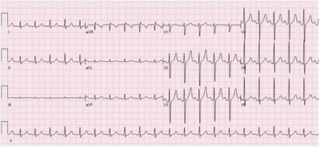
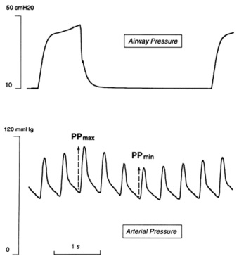
A O volume corrente deve diminuir pelo risco de barotrauma.
B A expansão volêmica deve continuar para elevar o débito cardíaco.
C A punção para alívio do derrame pericárdico deve ser realizada.
D A droga vasoativa de escolha é a dopamina, pelo maior efeito miocárdico.
Questão 103 · TEP em Gestantes · Pneumologia · 4000184062Caso 2 Gestante, 35 anos, encontra-se com 31 semanas de idade gestacional. Refere dispneia súbita e dor torácica; é ventilatório dependente. Nega perda de líquido ou de sangue, dor abdominal e diminuição da movimentação fetal. Apresenta SatO₂ 98% em ar ambiente, FR 24 irpm sem esforço, PA 110x70 mmHg e FC 95 bpm. POCUS pulmonar Padrão A, com deslizamento pleural presente. Abdome: altura uterina de 32 cm, ausência de líquido livre em cavidade, BCF 130 bpm, feto com tônus adequado, presença de movimentos respiratórios e movimentação fetal. ILA 14. Considerando a investigação da principal hipótese diagnóstica, qual é o exame subsidiário mais adequado?
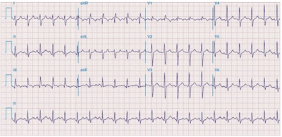
A Angio TC de tórax.
B Radiografia de tórax.
C POCUS de MMII.
D D-Dímero.
Questão 104 · Ventilação mecânica · Pneumologia · 4000184061Caso 2 Gestante, 35 anos, encontra-se com 31 semanas de idade gestacional. Refere dispneia súbita e dor torácica; é ventilatório dependente. Nega perda de líquido ou de sangue, dor abdominal e diminuição da movimentação fetal. Apresenta SatO₂ 98% em ar ambiente, FR 24 irpm sem esforço, PA 110x70 mmHg e FC 95 bpm. POCUS pulmonar Padrão A, com deslizamento pleural presente. Abdome: altura uterina de 32 cm, ausência de líquido livre em cavidade, BCF 130 bpm, feto com tônus adequado, presença de movimentos respiratórios e movimentação fetal. ILA 14. A paciente iniciou o tratamento e seguiu internada. Encontrava-se em boa evolução clínica quando, depois de 1 semana, apresentou episódio de piora da dispneia, agora associada à hipotensão, sendo levada à sala de emergência. Dentre as medidas terapêuticas, foram necessárias doses crescentes de noradrenalina e dobutamina parenteral, além de suporte ventilatório invasivo, cuja monitorização está apresentada. Qual é o modo ventilatório programado para esta paciente?

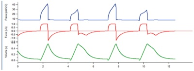
A Ventilação mandatória intermitente sincronizada.
B Pressão assisto-controlada.
C Pressão de suporte.
D Volume assisto-controlado.
Questão 107 · Obstetrícia · Assistência ao parto normal · 4000184058Caso 4 Gestante, 42 anos, primigesta (fertilização assistida). Apresenta hipertensão arterial crônica há 7 anos, atualmente em uso de alfa metildopa 2,0 g ao dia, anlodipino 5,0 mg ao dia, AAS 100 mg ao dia e multivitamínico com ácido fólico e sulfato ferroso. Encontra-se em acompanhamento pré-natal de alto risco. Comparece à consulta pré-natal com 37 semanas de idade gestacional e realiza ultrassom obstétrico com os seguintes achados: feto em apresentação cefálica, peso estimado de 2.205 g, percentil 7, placenta posterior e índice de líquido amniótico de 11. A paciente está ansiosa e preocupada com o parto. Apresenta seu plano de parto com os seguintes desejos: I. parto por via vaginal; II. aguardar o tempo do bebê, com o trabalho de parto espontâneo até 42 semanas; III. presença do companheiro e de fisioterapeuta na sala de parto; IV. recusa uso de ocitocina endovenosa para acelerar as contrações; V. clampeamento do cordão umbilical pelo companheiro, em momento oportuno; VI. contato pele a pele com a criança, imediatamente após o nascimento. Todos os pontos apresentados foram discutidos com a paciente e com seu companheiro. Considerando as condições clínico-obstétricas e a segurança do binômio materno-fetal, qual é o item do plano de parto que não poderia ser contemplado na assistência obstétrica?
A Contato pele a pele imediato ao parto.
B Via de parto vaginal.
C Clampeamento do cordão.
D Aguardar trabalho de parto espontâneo.
Questão 108 · Obstetrícia · Indução de parto · 4000184057Caso 4 Gestante, 42 anos, primigesta (fertilização assistida). Apresenta hipertensão arterial crônica há 7 anos, atualmente em uso de alfa metildopa 2,0 g ao dia, anlodipino 5,0 mg ao dia, AAS 100 mg ao dia e multivitamínico com ácido fólico e sulfato ferroso. Encontra-se em acompanhamento pré-natal de alto risco. Comparece à consulta pré-natal com 37 semanas de idade gestacional e realiza ultrassom obstétrico com os seguintes achados: feto em apresentação cefálica, peso estimado de 2.205 g, percentil 7, placenta posterior e índice de líquido amniótico de 11. A paciente está ansiosa e preocupada com o parto. Apresenta seu plano de parto com os seguintes desejos: I. parto por via vaginal; II. aguardar o tempo do bebê, com o trabalho de parto espontâneo até 42 semanas; III. presença do companheiro e de fisioterapeuta na sala de parto; IV. recusa uso de ocitocina endovenosa para acelerar as contrações; V. clampeamento do cordão umbilical pelo companheiro, em momento oportuno; VI. contato pele a pele com a criança, imediatamente após o nascimento. Todos os pontos apresentados foram discutidos com a paciente e com seu companheiro. Qual é a conduta obstétrica para resolução dessa gestação?
A Indução com ocitocina.
B Amniotomia.
C Preparo de colo com prostaglandina.
D Cesárea.
Questão 109 · Medicina Preventiva · 4000184056Caso 5 Carla é gestante e, com 13 semanas de gestação, iniciou pré-natal com enfermeira da Equipe de Saúde da Família. Na primeira consulta, apresentou resultado positivo para sí lis em teste rápido. Nega exames ou tratamento prévios. Exame clínico sem alterações. No momento da abertura do pré-natal, o caso de sí lis foi noti cado à Vigilância e a enfermeira prescreveu penicilina benzatina, 2,4 milhões UI por semana, durante 3 semanas. A paciente refere que teve duas parcerias sexuais no último ano: Mateus, de quem está grávida e com quem não mantém mais relações sexuais há 8 semanas; e Sandro, o atual namorado, com quem iniciou relações há 3 semanas. O teste rápido de sífilis de Mateus foi positivo e o de Sandro foi negativo. Ambos sem exames ou história de tratamento prévios. Para as questões a seguir, considere as recomendações do Protocolo do Ministério da Saúde e a dose de penicilina benzatina de 2,4 milhões UI. Carla está com baixa adesão ao pré-natal. O caso foi discutido na reunião de equipe da Estratégia de Saúde da Família e fo i planejada uma visita domiciliar. Considerando as informações obtidas até o momento, qual é a frase que re ete a melhor abordagem inicial da médica para ampliar a adesão de Carla ao pré-natal?
A "O que tem acontecido para você não comparecer às consultas de pré-natal? Há algo que possamos fazer para facilitar a sua vinda à UBS?".
B "Seu filho tem risco de nascer com problemas devido à sífilis; é nossa responsabilidade encaminhá-la ao Conselho Tutelar caso você não venha às consultas.".
C "Seu namorado está impedindo que você venha ao pré-natal? Você está sofrendo alguma violência?".
D "Mesmo que você não tenha sintomas, a criança pode nascer com alterações da sífilis, por isso é importante que você compareça ao pré-natal".
Revisar: possível letra faltando em enunciado
Questão 110 · Sif ilis na gestação · Obstetrícia · 4000184055Caso 5 Carla é gestante e, com 13 semanas de gestação, iniciou pré-natal com enfermeira da Equipe de Saúde da Família. Na primeira consulta, apresentou resultado positivo para sí lis em teste rápido. Nega exames ou tratamento prévios. Exame clínico sem alterações. No momento da abertura do pré-natal, o caso de sí lis foi noti cado à Vigilância e a enfermeira prescreveu penicilina benzatina, 2,4 milhões UI por semana, durante 3 semanas. A paciente refere que teve duas parcerias sexuais no último ano: Mateus, de quem está grávida e com quem não mantém mais relações sexuais há 8 semanas; e Sandro, o atual namorado, com quem iniciou relações há 3 semanas. O teste rápido de sífilis de Mateus foi positivo e o de Sandro foi negativo. Ambos sem exames ou história de tratamento prévios. Para as questões a seguir, considere as recomendações do Protocolo do Ministério da Saúde e a dose de penicilina benzatina de 2,4 milhões UI. Após a abordagem da médica, Carla passou a comparecer mais frequentemente às consultas. Com idade gestacional de 35 semanas, apresentava os seguintes resultados para o exame de VDRL: I. 13 semanas: 1:64. II. 26 semanas: 1:8. III. 32 semanas: 1:32. Qual é a conduta adequada?
A Tratar Carla com 2 doses de penicilina benzatina, com intervalo de uma semana; tratar Sandro com dose única de penicilina benzatina.
B Tratar Carla com 3 doses de penicilina benzatina, com intervalo de 1 semana; tratar Sandro com dose única de penicilina benzatina.
C Tratar Carla com 3 doses de penicilina benzatina, com intervalo de 1 semana; tratar Sandro com 3 doses de penicilina benzatina, com intervalo de 1 semana.
D Tratar Carla com dose única de penicilina benzatina; tratar Sandro com dose única de penicilina benzatina.
Revisar: possível letra faltando em enunciado
Questão 111 · Medicina Preventiva · 4000184054Caso 6 O serviço municipal de vigilância epidemiológica (SMVE) de uma cidade do interior do estado foi acionado para investigar a ocorrência de um “caso de meningite”, no O campus E m 16 de março de 2022 Veterinária, apresentou os primeiros sintomas, com início súbito de febre, cefaleia intensa e rigidez de nuca ao exame clínico. Foi atendido na emergência do hospital universitário e internado no mesmo dia. Em 19 de março de 2022 meningite, de paciente do sexo masculino ( dos sintomas em Os dois pacientes não se conheciam, porém ambos relatavam ter participado da festa de recepção aos calouros, realizada no dia portaria da casa noturna a partir do tradicional na cidade, com outros 9 moradores. Ele divide o quarto com um outro estudante. Já o vendedor ( mora na casa de sua família, onde vivem os seus pais e dois irmãos menores. Em 20 de março de 2022 anos, caloura do curso de Medicina. As suas aulas iniciaram-se em havia viajado para a casa de sua família, em um município próximo; no dia cefaleia intensa, mal-estar geral e febre, sendo internada na Santa Casa do município. Em seguida, apresentou manchas hemorrágicas em mãos e pés, evoluindo para choque e óbito, 12 horas após a admissão hospitalar. Na Declaração de Óbito foi registrada, como causa básica, “septicemia” (CID A41). Uma colega de turma informou à equipe de vigilância epidemiológica que esta paciente também havia participado da festa de recepção dos calouros, em Qual é o procedimento metodológico para confirmar a existência de um surto relacionado ao campus universitário e/ou ao município em questão?
A Consulta e exame clínico dos participantes da festa.
B Comparação com a ocorrência em anos anteriores.
C Inquérito soroepidemiológico dos participantes da festa.
D Esperar a ocorrência de casos adicionais.
Questão 112 · Medicina Preventiva · 4000184053Caso 6 O serviço municipal de vigilância epidemiológica (SMVE) de uma cidade do interior do estado foi acionado para investigar a ocorrência de um “caso de meningite”, no sedia 10 cursos de graduação e tem cerca de 4.000 alunos, 350 professores e 400 funcionários. E m 16 de março de 2022 Veterinária, apresentou os primeiros sintomas, com início súbito de febre, cefaleia intensa e rigidez de nuca ao exame clínico. Foi atendido na emergência do hospital universitário e internado no mesmo dia. Em 19 de março de 2022 meningite, de paciente do sexo masculino ( dos sintomas em Os dois pacientes não se conheciam, porém ambos relatavam ter participado da festa de recepção aos calouros, realizada no dia portaria da casa noturna a partir do tradicional na cidade, com outros 9 moradores. Ele divide o quarto com um outro estudante. Já o vendedor ( mora na casa de sua família, onde vivem os seus pais e dois irmãos menores. Em 20 de março de 2022 anos, caloura do curso de Medicina. As suas aulas iniciaram-se em havia viajado para a casa de sua família, em um município próximo; no dia cefaleia intensa, mal-estar geral e febre, sendo internada na Santa Casa do município. Em seguida, apresentou manchas hemorrágicas em mãos e pés, evoluindo para choque e óbito, 12 horas após a admissão hospitalar. Na Declaração de Óbito f o i registrada, como causa básica, “septicemia” (CID A41). Uma colega de turma informou à equipe de vigilância epidemiológica que esta paciente também havia participado da festa de recepção dos calouros, em No caso 1, o exame laboratorial confirmou a infecção por central de saúde pública do estado, para sorogrupagem. O sorogrupo B foi identi cado. O caso 2 também teve o exame coletado e foi reagente para 3 por critério clínico-epidemiológico. Em relação à ocorrência de doença meningocócica no município, a página da Secretaria Municipal de Saúde divulgou a seguinte tabela: Considerando as informações, é possível afirmar que ocorreu um surto de doença meningocócica neste município?
A Não, pelo pequeno número de casos.
B Sim, pelo aumento da incidência em 2022.
C Sim, pelo agregado de casos com vínculo epidemiológico entre si.
D Não, pelo diagnóstico incompleto ou não realizado em dois casos.
Revisar: possível letra faltando em enunciado
Questão 115 · Pediatria · Classif icação e Tratamento da Crise · 4000184050Caso 8 Paciente de 5 anos, sexo masculino, com antecedente de dermatite atópica, rinite alérgica e internações prévias por crises de sibilância, foi admitido no setor de emergência, apresentando quadro de febre de até 39.5 ºC, tosse e di culdade para respirar há dois dias. Apresenta o seguinte exame clínico inicial: I. regular estado geral, corado, hidratado, alerta, orientado; II. 2 BRNF, sem sopros, FC: 152 bpm, PA: 88x46 mmHg; III. murmúrio vesicular presente, reduzido bilateralmente, com estertores crepitantes em base direita e sibilos difusos, tiragem subdiafragmática, intercostal e de fúrcula, com tempo expiratório prolongado, FR: 42 irpm; saturação de oxigênio de 92% em ar ambiente, 96% em máscara de Venturi 50%; tempo de enchimento capilar de 2 segundos, pulsos cheios; IV. peso 20 Kg. Realizou o exame radiológico apresentado. Qual é a prescrição inicial mais adequada (itens 1-3) e o antimicrobiano a ser introduzido (item 4)?
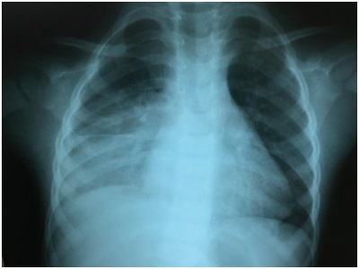
A 1) Salbutamol 600 mcg, via inalatória, 3x com intervalo de 20 minutos;
B 1) Salbutamol 200 mcg, via inalatória, 3x com intervalo de 20 minutos;
C 1) Salbutamol 200 mcg, via inalatória, 3x com intervalo de 20 minutos;
D 1) Salbutamol 600 mcg, via inalatória, 3x com intervalo de 20 minutos;
Questão 118 · Antiagregantes Plaquetários · Cardiologia · 4000184047Caso 9 Homem, 59 anos, refere empachamento e vômitos esporádicos que se intensi caram na última semana. Apresentou perda de 6 kg neste período. Nega alteração do hábito intestinal. Trabalha como secretário e na última semana pediu afastamento devido à fraqueza, apesar de realizar sozinho suas tarefas em casa. Tem diabete melito, hipertensão arterial e é tabagista (40 anos.maço). Teve infarto agudo do miocárdio há 7 meses, quando foi submetido à angioplastia e colocação de uso de aspirina, clopidogrel, atenolol, metformina e atorvastatina. Ao exame clínico, encontra-se em bom estado geral: IMC: 21 kg/m²; ausculta pulmonar e cardíaca sem alterações; abdome ácido, escavado e sem massas palpáveis; toque retal sem alterações. Exames laboratoriais: Hb 9,6 g/dL; Ht 29%; VCM 77 fL; HCM 25 pg; albumina 3,1 mg/dL. Realizada endoscopia digestiva alta, que evidenciou lesão estenosante em antro com difícil passagem do gastroscópio infantil. Foi indicado tratamento operatório. Quais são as medidas que devem ser adotadas no pré-operatório com relação ao clopidogrel e à metformina?
A Suspender o clopidogrel 5 dias antes da operação e manter a metformina.
B Suspender o clopidogrel 5 dias antes e a metformina 2 dias antes da operação.
C Manter o clopidogrel e suspender a metfomina 5 dias antes da operação.
D Manter o clopidogrel e manter a metformina.